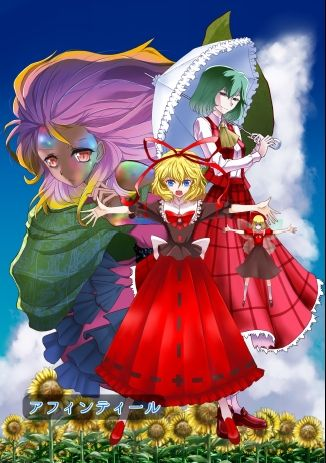

| 曲舞神楽 (アフィンティール) | |
| きゅらうえる | |
| (2016) | |
曲舞神楽 きゅらうえる
初めまして。「きゅらうえる」と申します。ピクシブで東方二次創作＆オリジナル作品を投稿しているしがない小説書きです。今回一念発起して、電子書籍で小説を領布してみる事にしました。拙い出来ではありますが、どうかご笑覧下さい。
一念発起したとは言いつつも、文体やノリ、ストーリー展開の癖はピクシブに投稿した過去作と基本的には変わっておりません。その意味では、ピクシブで僕をご存知の方でも安心してお読み頂けると思います。初めて僕の小説をご覧になる方にも気に入って頂けるかどうか、今からドキドキですが、東方とキャラに対する愛だけは詰め込みましたので、どうか宜しくお付き合い下さい。
それでは、本編をどうぞ。初めての電子書籍領布なので、色々と至らない点は有るかと思いますが、僅かでもお楽しみ頂ければ幸いです。
紅美鈴は手強い敵と対峙していた。具体的にどこがどう手強いかと云うと、引いてくれないのだ。説得にも頑固に応じてくれないし、無表情ではあるが、相貌にあどけなさの残る可愛らしい付喪神の娘を、それだけの理由で叩きのめす訳にもいかない。そもそもこの少女、自分が守る紅魔館正門を突破する気は端から無いようで、その意味でも無条件で戦闘、というのも躊躇わられ、ほとほと対応に困り果てていた。
「さあ！私と最強の座を賭けて戦え！！」
掛け声こそ勇ましいが、その声音は美鈴の耳朶のずっと下から発せられている。何しろ狐の面を斜に被るその頭の天辺が、精いっぱい背伸びしていると云うのに、美鈴のしなやかな腰のちょっと上くらいの高さにしか達していないのだ。青いチェック柄をした上着の襟元にちょこんと付けたピンクのリボンや、それを留める星・丸・三角・罰点の色取り取りのボタン、中間が極端に膨らんだ椿花色のバルーンスカート、赤・緑の色違いのリボンに飾られたフェルトのブーツなど、全体的に幼い印象を与える服装で、どこをどう見ても戦闘だの格闘だのと云った物騒な行為に好適とは思えない。まあ美鈴が着込んだ、袖を絞り腰布の切れ込みの深い孔雀緑のチャイナ服様戎衣だって、前垂れに勇壮な降り龍が刺繍してあるとは言え、特に戦闘に向く衣服という訳でもないのであるが。
「ええと、秦...こころちゃんだったっけ？わたしはあなたの求めているような最強の存在じゃないから、ご期待には添えないと思うなあ」
何度も何度もした弁明を、己でもくどいと思いつつも更に繰り返す。しかし美鈴を見上げる面霊気の少女は納得してくれない。
「何を言う！先だっての異変で、幻想郷の強者どもをバッタバッタと薙ぎ倒し、更には地底に封印されていた魔神をも討滅したと聞いたぞ。どうして闘いを避ける？私が相手では不満か！？」
こころと、彼女の周囲をメビウスの帯の軌道で遊弋する数多の能面の群れが、一斉に美鈴を睨んで青白く発光する。まるで警告しているかのように。
「薙ぎ倒したのはわたしじゃないし、魔神だって滅してないわよ.........」
丹花から溜め息を漏らしつつ反論する。こころの言は真実の一端を突いてはいるが、さりとて正確でもない。東風谷早苗や風見幽香、聖白蓮などに喧嘩を売って重傷を負わせたのは妹の玉玲であるし、魔神は討滅したのではなく生まれ変わらせただけだ。自分は嘘は吐いていない。うん、断じて吐いてない。閻魔様の法廷でも偽証罪には問われない筈だ。
（もうすぐ３時だし、咲夜さんがおやつを持ってきてくれるまでに何とかしたいのだけれど............）
同僚でメイド長である十六夜咲夜は生真面目なせいか、自分が明らかに館の脅威でない氷精のチルノや宵闇の妖怪ルーミアらと談笑したり戯れたりするだけでも非常に不機嫌になるから、こんな所を見られたら毎日の楽しみにしている茶の子を引っ込められるだけに止まらず、恐らく当分、口も利いてくれなくなってしまう。宥めるのが本当に大変なので、出来れば彼女が門前にスレンダーな姿を現す前にこの娘を平和裏に退去させたい。
（ん？おやつ？）
何か心に引っかかるものが有った。そう云えば、今日のおやつは確か咲夜さんでは無く.........
「ええぃ、またダンマリか！やはり悠長な事を言わず、一輪に教えられたように問答無用で襲い掛かるんだった！！ゆくぞ！いざ尋常に！勝負！！」
美鈴が長考している間にあれこれと口上を並べ立てていたこころが、決闘を拒み続ける美鈴に業を煮やし、被っていた面を般若に切り替えると、遂に実力行使に出た。見習いとは言え僧侶の癖に、こんな世間知らずそうな少女になんて殺伐としたアドヴァイスをしているんだと、最近訪れていなかった命蓮寺の妖怪修行僧、雲居一輪に脳内で苦情を浴びせつつ、美鈴は蒼銀の燐光を放つ、妖力を凝らせた薙刀による突進に備え、慌てて軸手を鉤形に折り曲げて防御の構えを取る。
その時、大地が裂けた。
激突直前の美鈴とこころを分断するように、地面を巨大な漆黒の刃が奔る。後ろを振り返ると、手刀を振り抜いた姿勢のまま仁王立ちしている、３週間程前のある事件を契機に、美鈴が紅魔館へ自らの妹として迎え入れた紅玉玲が、初めて姉の為に作って、そして一緒に食べようと持って来た山盛りの月餅と、２人分の酥油茶を載せた水玉模様の丸盆を、無声でゴシック様式の尖頭を備えた門柱横の簡素なテーブルに置いたのが見えた。
「................................................」
よりによってこんな時に、咲夜さんより事態がややこしくする子が来てしまった.........と美鈴は心中頭を抱え、自分の運の悪さを呪った。
「玉玲、逸らないのよ？この子は別に...」
自分と同じ出で立ちだが、色彩は燃え立つが如き辰砂紅、前垂れを飾るは天を指して舞う鳳凰の衣裳を纏う妹の動きを美鈴は制しようとしたが、しかし玉玲はそれよりも早く、光彩揺らめく金色の瞳で曲者を睨み付けつつ、突き出した人差し指の先から己の意思を放つ。
《姉さんと紅魔館の敵、倒す》
針で刺されたような痛みと同時に、こころの精神に直接思考が届いた。言葉を発する事が出来ないこの少女は、その不自由を補うため、触れられる対象には接触共感伝達法を、離れた相手に対しては、胸中の思惟を『気』のように撃ち込む事により意思表明するという、珍しいコミュニケーション手段を採る。自身の「気を集束させる程度の能力」の応用とも言えるが、１度に短い文章しか伝えられない上、思考が圧縮されている影響なのか、原色のように強烈な特定の感情に彩られているので誤解も生じがちだ。更に僅かであれ痛みを伴うため、事情を知らない相手を怒らせてしまう事も多い。事実、玉玲と初対面のこころは、意思に込められた敵意と物理的な痛みを、挑発を交えた示威行為と受け取った。
「そうか！お前が噂の最強妖怪だな！！ならば私の対戦相手はお前だ！我が薙刀の威力、とくと味わうがいい！！」
おかしいと思っていたのだ。吸血鬼の館の門番を自称しながら、緊張感のまるで無い顔でへらへら笑ってばかりいるのっぽの太平楽が、幻想郷中の名立たる人妖を倒した存在とはどうも信じられなかったから。それに先般まで対峙していたこの女からは、自分の前に幾度と無く立ちはだかった宗教者達から感じた強者のオーラが、微塵も感じ取れなかった。容貌は自分と同年齢に見える位に幼いものの、新たに登場した、緑の黒髪に墨色の雷電を纏い、相貌に感情の乏しい少女こそ本来闘うべき相手とこころは断じ、薙刀を構え直して突撃を開始した。
「２人ともやめなさ―」
「！！」
対して、最初からこころを敵性認識している玉玲の反応も迅速だった。素早く軽いフットワークで美鈴の傍をすり抜けた少女は、姿勢を低くし、暗雲を束ねて斬馬刀に変えたような、長大な『気』を発する左腕だけを大上段に振り翳して、美鈴そっくりの吊り上った眦を更に吊り上げ、鬼気横溢した表情で疾駆しこころに迫る。
凄まじい激突音、は無かった。
「止めなさいと言ったでしょう？」
こころは大地に仰向けに倒れ目を丸くしていた。何が起こったのだ？自分と少女の間に忽然と割り込むように現れた美鈴の姿を認めた刹那、しゃらん、と足元で玉を転がすような音が鳴り、それが彼女が前垂れの裾から下げていた鈴の音色だと気付く間も無く、何か大きな力で身体ごと引っ繰り返され背中から叩き付けられた。顎を刳って激突する筈だった少女にどうにか視線を向けると、彼女も同じように地面に転がりこちらを見ている。
「何を...した......の...............？」
衝撃で肺腑から空気が追い出され、息も絶え絶えな己の上半身にそぞろかな影を投げ掛ける美鈴に、驚きを隠せないまま問う。
「何って.........引っ掴んで裏返しただけだよ」
事も無げに答えた美鈴だったが、その説明は事実をかなり大雑把に四捨五入していた。精確には、神速の運歩で衝突が予想される地点に先回りし、妖力を以って作り出した薙刀と『気』で精製した斬馬刀を同時に掴んで、両の手首を翻した勢いを利用して２人を引っ繰り返したのである。互いの武術を教え合う仲である魂魄妖夢から教わった套路の応用に過ぎないが、武道に疎い者には魔法のように見えたかも知れない。
「大丈夫？手加減はしたつもりだったんだけど、どこか怪我しちゃった？」
なかなか立ち上がろうとない２人を心配し、美鈴は中腰になって両側の２人に手を差し出したが、こころは呆けたが如くその筋肉質な腕先を見詰めていた。
手加減された？いや、軽くあしらわれた？闘わんとした少女ともども、羽虫か何かみたいに？呆然は驚愕に、驚愕は恥辱に、恥辱は憤怒に変わり、頭からずれ落ちそうになっていた能面もそれにつれ、邯鄲男・飛出・小町・怪士と目まぐるしく変化して、無表情なこころの感情の動きを即座に忠実に表出する。
こころは差し伸べられた手を払い除け、跳ねるように後方に宙返りして美鈴から距離を取った。厳めしい怪士の面で顔を覆い、梅紫の髪を振り乱した外貌は、能に登場する魔怪の怒り狂う姿そのものだ。
「騙したな！弱いフリをして油断を誘い、私を虚仮にして楽しんでいたのか！！」
「別に隠していた訳じゃあないんだけどねえ。『能ある鷹は爪隠す』なんて言うけれど、そんな小器用な事を一々するのは面倒で」
玉玲を助け起こしてやりながら、美鈴は相手の激怒を受け流し澄んだ微苦笑を浮かべる。そのいやに颯爽とした仕草が、こころを増々怒りで燃え立たせ、彼女は口を真一文字に引き結んで子供のように地団駄を踏む。
「ふふっ」
美鈴の笑みが深くなる。口にしたら怒るだろうが、この子は初めて邂逅した時の玉玲に似ていると思った。表情に乏しいという外面の印象だけでなく、生まれたばかりの精神に不釣合いの強い力、それを何か意義有る目的のために活用しなければという、全身から発せられている焦燥感。それはかつてユーラシアを流浪したすえ北西アフリカからマルタ島に渡り、聖ヨハネ騎士団を助勢し、オスマン帝国の精鋭軍団と戦った頃の美鈴の心情とも通底するものだった。子供は元より好きな美鈴だったが、惧れも知らず突っ掛かってくるその様子が、騎士団長ラ・ヴァレッテと事ある毎に衝突した過去の自分と重なって気恥ずかしくも微笑ましく感じられ、妹をもう１人増やしたい心情になっていた。
とは言え、このままではどうも収まりそうにない。力を見せ付けるような真似をしてしまった以上、先程までの発言を繰り返しても説得力が無いし、面子を潰された格好のこころだって引っ込みが付くまい。事ここに至ってしまっては、怪我をさせる心配さえ除外できれば、彼女の気が済むよう、軽く手合せする位は吝かではないのだが。
「うん、そうだ。じゃあ、相手したげる。わたしはここから動かない。使うのは指一本だけ。この約束を破るか、一撃当てられるかしたらわたしの負けって事でどう？」
美鈴の言い様は、まるで幼児にお遊戯を呼び掛けるかのようだった。実際美鈴の表情と口調は、よく遊びに来るチルノたち妖精・妖怪年少組の子等をあやす時のそれで、本人も恐らくその程度の認識であろう。その悠長な態度からは、最強の座を賭けて対決する緊張感はまるで見られなかった。
「馬鹿にして！薙刀の突撃だけが私の全てと思うな！喰らえ！『怒れる忌狼の面』！！！」
こころが大地を蹴ると同時に、燃え盛る焔のようなオーラが、高々と掲げた両腕を伝って巨大な狼の顎門の形を成し、狐面で顔容を覆った彼女を包み込む。そして自身が巨大な妖力の砲弾となって、凄まじい速さと地を摩す威力で美鈴を屠らんとする。しかし―
「おっと危ない」
握り合っていた掌を通じて玉玲に下がるよう指示した美鈴は、立てていた空手の人差し指を無造作に突き出し、眼下から彼女の豊かな胸めがけて突進してきたこころが被る狐面をちょこんと小突いた。それだけで、能面を抜けて『気』の威力が物理的衝撃となって伝わり、たちまち面霊気の少女は脳震盪を起こして運動能力を喪失する。
更に、その指先は彼女の能面に貼り付いて離れなかった。まるで大魚を釣り上げるが如く右腕を振り上げた美鈴は、腰を捻りつつ振り返り、そのまま腕を振り下ろす。己の突撃の勢いを制御できず、それに勁力まで加えられて増速し、こころは「頭から地面に叩き付けられる！」と恐怖して思わず目を瞑った。
「あなたの、勝ちだよ」
いつの間にかこころは鯱と化していた。顔を面ごと美鈴のヤツデ葉のような大きな手の平に支えられ、海老反りした左足をもう片方の手で介添えされて倒立しているという、非常に滑稽な態勢である。大地に衝突する直前に、美鈴によって抱き留められたのだと回復した脳の理解が追い付いた時には、少女は逆さまの状態から解放され、固く踏み締められた地面に正座した救い主の膝の上に腰掛け、相好を崩して見下ろす屈託の無いトルコ石碧の双眸をぼんやりと見詰めている状態になっていた。
「私の勝ち.....................？手も足も出なかったのに.........？」
「指以外を使っちゃったからね。だからあなたの勝ち」
あっさりと敗北を認めてしまうその言い種は、ついさっきまでなら不真面目に見えたかも知れない。しかし２度も成す術無く打ち倒された後で、何事も無かったかのように微笑みかけられながらそう言われると、その勝敗への拘りの無さがただただ不思議に感じられる。紅魔館の門番長を務めているのだと云うこの女性人妖は、あらゆる中国拳法の奥儀を極め、『瑪瑙赤の竜王』と恐れられた格闘家であったとの風聞だった。格闘家とは、拳で相手を倒す事によって生きる者の筈。なのに、なぜ彼女はこうまで勝利に対して無欲なのか？
「貴女は、負けるのが悔しくないの？」
心底からの疑問に美鈴は答えず、自分に構ってくれない事に拗ねて頬を膨らます玉玲の、漆黒の錦のような髪を、『鳳』と大書された人民帽をずらしてわしゃわしゃと掻き撫でてやりながら呟いた。
「あなたは、わたしと似ているね。遠い昔のわたしと。１つの事しか考えていなくて、一本道をがむしゃらに走り続けて、それ以外、自分には必要の無いものだと決め付けて生きてきた...............」
それは返答と言うより独白だった。誰に聞かせるでもない、己への懺悔。穏やかな声音に苦衷と哀しみが滲む。
「そうして......全てを捨てて力だけを求めて、気が付いてみると、わたしの周りには誰もいなかったよ。ただ恐れられ避けられる存在になっただけで。お嬢様に出会わなかったら、今でもそんなだったかも」
翳り始めた陽が、美鈴の顔にも翳を作る。甘やかな悔恨、こころが美鈴から感じ取ったのは複雑でそれぞれが相矛盾する感情だったが、強いて一言で表せばそのようなものであった。
「最強ってね、なってみると案外つまらないものなんだよ？」
その表情はいつかのマミゾウに似ている、とこころは思った。佐渡から来た化け狸の頭領。こころに感情を学ぶ方法を教えてくれた、両親などいない、面霊気である自分の母であり師匠のような存在である二ッ岩マミゾウ。明治より前の、魑魅魍魎が思うままに跋扈できた時代に続き、その後訪れた急激に変転する世の中に抗した妖怪達の蹶起と挫折を懐旧と共に語った時のマミゾウの顔は、こんな風な泣き笑いではなかったか。
同時に気付く。自分が本来望んでいたのは強くなる事でなく、感情を知り、それによって世界とそこに生きるもの達を識る事だったと。闘いを挑むのは、そのための一手段に過ぎなかったのだと。
《いつまでそこに座っているの》
不意に身体が揺すぶられる。同時に流れ込んでくる嫉妬の感情。のろのろと視線を移せば、最初に対戦し掛けた少女―美鈴がしきりに玉玲と呼んでいた―が、自分を押し退けようとグイグイと肩を押し、懸命に美鈴の膝の上から追い出そうとしていた。美鈴が反対側からこころを支えているので、当然それは上手くいかないのであるが。
「よしなさい、玉玲。仕方ないでしょう？神経が麻痺して動けないんだから」
美鈴は妹を窘めたが、ずっとこうして座らせている訳にもいかないのも確かだった。３時のお茶も出来ないし、何より侵入者が襲来した時に対処できない。後で咲夜さんに大目玉を喰らうのを覚悟で、玉玲にいっとき門番を頼み、紅魔館内の客室で休養させるか、或いはこの娘が仮寓し、境内で能楽を披露しているという博麗神社に送り届けるか？
ぎゅっ
広げた親指と人差し指の叉に顎を載せて考え込んでいると、その手を出し抜けにこころが掴んだ。
「こころちゃん、あなたもう―」
「弟子にして」
「へ？」
間抜けな声が美鈴の口から零れた。小一時間は動けないだろうと思っていたこころの回復の早さも驚きだったが、不意打ちのように投げ掛けられた言辞もまた予想外であったから。
「私は貴方を知りたい。その為に貴方を成り立たせているものが知りたい。だから拳法を習いたいの」
困惑する自分を見上げるこころの、紫のグラデーションが掛かった瞳は、宛らきらきらと銀漢のように輝いていた。そして感情を表現する面は小面。一途な思慕を表す能面だ。
「そうは言ってもね、既にフラン様やルーラー様、サティさんに玉玲にも教えていて、これ以上わたしの方も余裕が......」
「...........................................................................」
「いや、あのね」
きらきら、きらきら、きらきら、きらきら.........
「............わたしと時間が合う時でいいなら....................................」
純粋な熱意と好意を宿した無言の視線に、遂に美鈴は屈した。こころは彼女の膝から飛び降り、歓喜しているのだろう、恵比寿の面が頭上で笑い、彼女の周囲を巡る他の仮面も一緒に笑い、両手に掲げて舞い踊る、能面と同じ意匠の、妖力で作り出した舞扇の文様も笑っている。美鈴の方は表情に困って半笑いするしかなかったが。
後日、美鈴は門前に日参するこころとの関係を、鬼のような形相のパチュリーや咲夜に問い詰められて弁解に苦慮する事になる。
「さて、じゃあ取り敢えず、おやつにしようか。玉玲、作って来てくれた月餅を、こころちゃんにも１つ２つ上げていい？」
予想通りと云うべきか、玉玲はむっとした表情で黙りこくっていたが、美鈴が「明日お礼に大好物の愛玉子ゼリーを作って上げるから」と宥めると、渋々ながら承知してくれた。ありがとうの言葉の代わりに肩を軽く叩いて、卓上の月餅を真っ先に頬張る。ちょっと胡麻餡のコクが足りないかもと思ったが、自分の為に作ってくれたその気持ちが何よりの調味料だ。美鈴が「美味しいよ」と伝えると、玉玲はやっと機嫌を直して、山から１つ取ってこころに突き出した。
「これは何？」
「月餅、中国のお饅頭だよ。作ったんじゃないわたしが言うのも何だけど、どうぞ召し上がれ」
神妙な顔つきで受け取ったこころは、暫く月餅を色んな角度から矯めつ眇めつ観察していたが、やがて意を決して片端にパクリと噛み付いた。
「美味美味」
その後は一瞬で、小さくも無い月餅は残らず付喪神の少女の口の中に納まった。言葉や表情よりもよっぽど雄弁に感想を物語るその食べっぷりに、玉玲も満更ではないのか、無表情ながら口元が微かに和らいでいた。
もしかして妹に新しい友達ができるだろうか。だとしたら素敵な巡り合わせだ。近い将来そうなればいいなと思いつつ、美鈴は少し温くなった酥油茶を啜りながら、静かに目を閉じその濃厚な風味の余韻に浸った。
了
種族：妖怪
二つ名：天を知らぬ鳳雛
能力：『気』を収束させる程度の能力
テーマ曲：上海アリス変奏曲
紅魔館裏門の門番にして、同館の門番長、紅美鈴の妹とされる少女。『熱風異変』と通称されるようになった非公式な事件の直後、姉である美鈴に連れられて館の一員となる。さる異界の化学者のラボから魔神の力とその協力者の手により攫われ、騙されてその魔神の走狗として活動し、幻想郷各所で強者との戦闘を繰り返していたが、美鈴と激闘を繰り広げたすえ敗れ、彼女に諭されて改心、『紅』の姓と彼女の妹の立場が与えられて紅魔館に引き取られた。余談だが、美鈴に懇願されて保護・雇用の許可を出した紅魔館の主人で、彼女に異変の全関係者を叩きのめすよう命じたレミリア＝スカーレットは、「お前の事だから、そんな風に話を纏めるだろうと思っていた」と、深い溜め息を吐きつつ迎え入れるのを了承したそうである。
「玉玲」の名は異変後、レミリアとの謁見の直前に美鈴が即興で考えた名称がそのまま採用されたもの。異変中は当人が生れ付き喋れないために名乗りを一切せず、そのせいか衣服の色がまるで違うにも拘らず、紅魔館関係者や美鈴の友人達以外からは美鈴だと思われていた。（美鈴は初めて彼女と相対した時、「皆さん、普段わたしのどこを見ているんですか！」と慨嘆したそうな。）また、異変の最中、濡れ衣を着せられ彼女を追う立場だった美鈴の同行者である咲夜らは、当時の彼女を「ニセ美鈴」とか「美鈴擬き」などと仇名していた。
外見は容姿・衣装共に美鈴に準ずる。容貌及び体格の差異は美鈴より顔立ちが幼い事、表情の変化に乏しい事、瞳の色が暗めの金色で髪の色が漆黒な事、身長が１０㎝ほど低い事、それに伴ってか胸も小さい事などである。服装の面では、戎衣の色が辰砂紅である点、前垂れに姉の降り龍に対して、金糸で天を指して飛翔する鳳凰が刺繍されている点、被っている人民帽に付けたバッジの字が『鳳』である点などが違う。身長と体格に関しては、まだ成長すると本人は信じているが、無論、妖怪なので奇蹟でも起こらない限りそんな事は有り得ない。
戦闘スタイルも、姉と同じく『気』を駆使した中国拳法による格闘戦である。但し美鈴が蹴りと拳による突きが主体なのに対し、玉玲は手刀や貫き手がメインと云う違いが有り、姉と比べて攻撃の鋭さに勝るが重さで劣る他、本気を出した時のオーラが美鈴の金に対し、彼女は漆黒なのが顕著な相違点。また守勢に回ると精神的に脆い一面もある。それらの欠点に関しては、現在、姉の指導の下に克服を目指している真っ最中。ではあるものの現在も実力は折り紙付きと言って良く、異変時に一度は美鈴を倒してもいる。（美鈴が応龍の神気を甦らせる前ではあるが。）
こころとは一度は激突し掛かったが、今では仲の良い友達。折に触れて模擬戦などもしている。他の人妖とのそれや弾幕対戦は、玉玲がまだスペルカードを開発していない（必殺技は有る）のと、未だに戦闘＝殺し合いとの思考が抜け切っていないため、友人と認識した相手以外と闘うと手加減を忘れて危険なので美鈴から許可されていない。門番を務めている時も、侵入者が退去通告に従わない場合は姉かメイド長の十六夜咲夜、若しくは他の守衛隊隊員に通報して対処するように言い含められている。最近はチルノに突っ掛られても闘えないので悶々としているらしい。
性格は戦闘時を除けば割と穏やか。美鈴と同じ遺伝子を持つだけあって、まだ精神は幼いが、本質的には他者に優しい少女である。生まれて数年しか経たず、純真で世間慣れしていないため、嘘を見抜くのが下手。姉に似て、複雑な思考を巡らすのが苦手で粗忽者でもある。日常は思考がのんびりで、ぼんやりした娘と思われがち。戦闘用に生み出されたのもあって、情緒が未発達なため、他人と関係を結ぶのも上手くない。こころや門前によく遊びに来る多々良小傘などは貴重な友達。先述の通りチルノと仲が良くないので、仲間の妖怪・妖精年少組との間柄も微妙。それらとは関係無く遊びに来る宮古芳香は、そもそも彼女と美鈴との区別が付いていない。僵尸である芳香には、喋れない彼女のコミュニケーション手段たる、テレパシーや思考の打ち込みが通用しないため、何時まで経っても誤解が解けないでいる。だが親しく話し掛けてくれる事に悪い気はしていないようだ。
闘う為だけに生み出され、また自我を得て日が浅いため、中国武術以外の趣味は無いが、姉を喜ばそうと作った月餅が各方面で好評だった事を切っ掛けに料理、菓子類のそれへの興味を深めつつある。最近、乞われてデザートの作り方を教えている咲夜曰く、「筋は悪くない」とのこと。
現在の目標は武術の技倆で姉に追い付く事と、親しい友達をもっと多く作る事、そして彼女が「母さん」と呼ぶ異界の化学者に娘と認められる事。残念ながら、どれもまだ道程は遠そうである。
纁色とインディアン・イエローの海を行く。カッと照らす陽光の元、見渡す限り、花弁が自分の顔より大きな向日葵が風にそよいで波立つ広大な『太陽の畑』の上空を、秦こころは地上からの照り返しの眩しさに目を細めつつ飛翔していた。晩夏の８月。日車とも謂われる向日葵の盛りは過ぎようとしていたが、太陽を模ったが如き大輪の花はまだ色褪せていない。植物の感情までは読み取る事の出来ないこころではあるが、自分と天を見上げる無数の大きな暖色の顔容は、まだまだ生きる喜びに満ち溢れているように感じられた。
「さて、風見幽香はどこにいる？」
人間なら、年の頃１０歳を幾つか過ぎた程度にしか見えない外見に比して、やや低い印象の声で呟くこころ。地平の果てまで群生する向日葵はこころを楽しませてくれるが、彼女が来訪した目的は景勝を愛でる事では無い。師匠の言い付けで、「風見幽香」なる邪悪な妖怪を引っ立てて来るという重大な役目が有るのだ。そしてこの『太陽の畑』は、その風見幽香の棲家であるとの由。忘れてはいけない、この場所は敵地なのだ。こころは、尊敬する武道の師、紅美鈴との会話を思い出していた.........
「そう言えば幽香さん、最近来ないなあ」
吸血鬼の城館である紅魔館の、城門内正面に広がるイングランド式庭園で、この季節、庭園のあらゆる場所で伸び盛りの雑草を、暑さで汗だくになるのも構わず丹念に引き抜きながら自分と話していた野良着姿の美鈴が、何かの拍子にふと呟くのを耳にし、日ごろ中国武術を教えて貰っているお礼にそれを手伝っていたこころは隣で不思議そうに首を傾げた。
「ゆーか？」
「そう、風見幽香。それはそれは強い花の妖怪。人里にもよく足を運んでいるそうだから、見掛けたこと有るんじゃない？」
美鈴の問い掛けに、こころは無表情のままフルフルと首を振る。腰を屈め、薔薇の植え込みの間を這うようにして１本１本、土を掘り起こして乾燥させぬよう、根元に手を添えて叮嚀に抜いている美鈴と異なり、こころは腰を９０°折り曲げた姿勢で青草の茎の頂きを何本か纏めて引っ掴み、一気に力の限り引っこ抜くので、1/3位は途中で千切れてしまい、それをわざわざもう１回抜かねばならない羽目に陥っている。非効率で体力の無駄遣いな上、絹糸のように細く滑らかな梅紫の髪は地面に引き摺ってしまっているし、おまけに腰を痛めそうだが、こころが何だか妙に楽しそうなので美鈴は注意する事をせず、微苦笑しつつも面霊気の少女のするが侭にさせている。
放任主義で暢気に妹分を見守る美鈴の言葉を、隣り合って結局は彼女と殆ど同じスピードで草取りに励んでいたこころは、気になる単語が餃子の皮並みに柔らかそうな耳朶に届いたため、忙しく回転する腕を急停止させた。
「そんなに強いの？風見幽香って」
「強いね～～本気を出されたら、わたしでも相応の覚悟をしておかないと勝てないかも。口が悪くて手が早いのが玉に瑕だけど、自分に敵意を持たない相手には優しい人妖だよ。前に玉玲が怪我させちゃった事が有ってね。それ以来、あんまり訪ねて来ないものだから、ちょっと心配なのよ」
がっしりとした首だけを回し、こころの質問に答えた美鈴の表情は複雑で、感情の動静に敏感な面霊気の少女が感じ取った心情もまた複雑だった。
「『妖怪の山』のずっと西の方に在る『太陽の畑』と云う場所に住んでいるから、興味が湧いたなら行ってみたらどう？もし会えたら、ついでに『偶にはこちらにも顔を見せて下さいよ』って伝えておいて」
日に焼けて褐色がかった額の汗を拭ってそう言った美鈴に、こころは真面目腐った顔付きで頷く。毛髪と同色の、瞳孔の境界が曖昧な虹彩が使命感に燃えていたが、しぶとく地面にしがみ付く雑草を引き抜こうと躍起になっていた美鈴は、その事に全く気付かなかった。
「分かった、行く」
「宜しくね～～～～～」
軽い調子で頼んだ美鈴の意図は、自我が芽生えてまだ日が浅く、他者との関係を構築するのに不器用なこころの知己と経験を増やし、少女が成長する助けになればいい、程度の気楽な情思だった。しかし、自分を歯牙にも掛けず倒した美鈴をして、「強い」と言わしめた幽香を美鈴の宿敵と解釈したこころは、その後に彼女が発した言葉を飛び飛びにしか聞いておらず、それに少し前の会話で美鈴に聞いた噂話、「最近、『妖怪の山』の西側で、人妖問わず得体の知れない何かに襲われる事件が多発しているらしい」という話が混入し化学反応を起こした結果、「最近、『太陽の畑』で人間や妖怪を襲っている事件の犯人、風見幽香を捕まえわたしの元に引っ立てて来なさい」と命じられたと彼女は確信を以って勘違いしてしまった。無論、美鈴にとっては想像を絶する心理の変身であり、思い詰めたようなその表情を、見知らぬ相手と会う緊張感と誤認しても誰が彼女を責められよう。
「絶対、務めを果たす」
こころは口の中でそう呟いて拳を握り締め、決意を漲らせキッと蒼天を仰いだ。
日輪はいよいよ高く昇り、日差しは厳しさをいや増す。頭蓋が小さく、細身で凹凸の少ない上体に、中間が極度に膨らんだバルーンスカートに包まれた下体が、宝珠鈴を連想させるシルエットを形成しているこころの全身が、強烈な日光に当てられて黒々とした影を向日葵の海原に刻んでいる。出立したのはまだ早朝と言って良い時分だったが、『妖怪の山』を挟んで反対側に位置する紅魔館からここまで、予想していた以上に時間が掛かった。途中で氷精に突っ掛られて弾幕ごっこの相手をさせられ、時間を浪費してしまったのもいけなかったのだろう。気温上昇の勢いは先日以上で、幼さの抜けないこころの面貌は、チャームポイントである豊頬を中心に既に汗みずくだ。やっぱり昼間よりまし程度でも、涼しかった昨日の夕刻に来るべきだったと、彼女は今更ながら後悔した。
「でも師匠の教えには従わないといけなかったし...............」
少なくとも己の認識では大事な使命を授かって、こころはすぐにでも幽香拘引に動くつもりだった。が、勇んで飛び立とうとしたら美鈴に、「一度やると決めた事は最後までやり遂げなさい」と叱られ、結局その日は夕方まで草取りに明け暮れて、夜はそのまま中華風の家具に囲まれた美鈴の私室にて、彼女の妹で友達の紅玉玲も交え、好物の叉焼入り上湯炒飯をご馳走になりそのまま泊まり込んだ。そして今朝、鶏晨の頃に紅魔館の門前で紅姉妹に見送られて出立し、『太陽の畑』に至るまでに件の氷精との遭遇戦等、幾つかの道草を経て現在に至る。
「それにしても広い。これが全部、『万花の女帝』の支配地だというの？」
ここに来る前、風見幽香とその領地について調べるために立ち寄った人里の古書肆『鈴奈庵』で、人間に化けて適さか店番の鈴の髪留めを付けた少女と談笑していた、美鈴、雲居一輪と共にこころが師とも姉とも慕う二ッ岩マミゾウから教えられた情報に依ると、この『太陽の畑』は、南に向けて擂り鉢状の地形を成していて外から分かり辛いと云う話だったので、余ほど狭い土地なのかと思っていたのだが、実際に訪ってみれば、その考えは浅はかだった事が分かる。さほど高く飛んでいない所為もあるけれど、前後左右上下全てを眺め渡しても、大空と太陽と向日葵のどれかしか見えない光景が延々と続いているのだ。『万花の女帝』と云う大仰な称号もマミゾウからの伝聞だが、この雄大な光景を見るに、その名に恥じぬ広濶な領土だった。しかし見物だけならその広さを楽しむ事も出来るが、たった１人の人妖を探索するとなると、この地は一面、花だけで無く葉っぱも巨大な向日葵が体を寄せ合うように密生しており、下草はおろか土壌も見えない日輪草のジャングル。これは居場所を突き止めるのに、さぞや骨が折れるだろう。まあ、この時点でももう、かなり難渋してはいるのだが。
盆地の外縁まで到達して何も発見できなければ、適当な処で騒ぎを起こして敵を誘き出そうかなどと、こころが物騒な計画を立て始めたその矢先、視界ぎりぎりの遠くに、これまで見た事の無い物が姿を表した。さては女帝の居城かと、こころは側頭部に被っている猿猴の面を狐面に切り換え、目標に向け急激に速度を上げた。尻窄みなスカートの内側から、青銀の粒子が爆発音と共に凄まじい勢いで噴き出す。
事物が判別できるまで近付いてみると、それは茶色がかった朱の茨で編まれた玉葱型のドームだった。縦横に目の粗い織物の如く交差した棘だらけの太い蔓が寄り集まり、同系色の濃淡で格子柄を為して、総体として異教の神殿を連想させる辧柄色の構造物を現出させている。風見幽香は花を意のままにする能力を持つ妖怪と云うから、このような芸当もまあ可能なのだろうが、茨の網目の隙間から常に蒸気が噴出しているのが不気味だ。博麗神社の境内の片隅にも存在し、修祓に対する志との名目で、実質は社の巫女である博麗霊夢の貴重な収入源になっている温泉が、きっと地下からドーム内部にも湧出しているのだろう。それを証拠に、神社のそれとよく似た卵が腐ったような臭いが、湿気を帯びた生温い風に乗って押し寄せてくるし。
もしかしてあれは蒸し風呂と云うやつだろうか。だとするならそれを利用しているのは風見幽香以外に居るまい。ドームに籠っているであろう敵を引き擦り出そうと、こころがまだやや距離のある攻撃目標に対して青系主体のチェック柄の袖に包まれた両腕を翳したその時、眼下の向日葵が突如、一斉に首を上向け、彼女へ涙滴形の弾幕を発射してきた。
「うゎっ？！」
間一髪のタイミングでそれを躱したこころは、間髪入れず迫り来る多数の敵弾を避けるため不規則に針路を変えながら上昇し、ある程度の高さに達した所で太陽を背にして一瞬だけ停止、相手の潜伏位置を探るべく、自身が保持している六十六の能面のうち半分に当たる三十三面を展開する。日光に紛れて体勢を立て直すという理由も有ったこころの行動は功を奏さず、弾幕の幾つかが彼女を襲うが、何も無い空間から燐光を発して浮き出るように出現した面が、放射状に組み合わさって、増幅させた妖力を前面に向け解放し強固な盾となってそれを防ぐ。
「行け！仮面たち！！」
力強い号令と共に、様々な性別、年頃、表情、更には種々雑多な生き物や怪物の面が、蒼い航跡を曳きつつ四方八方に散って行く。本体である自分を囮にして敵の目を引き付けている間に、視覚を始めとした五感を共有している能面を以って、小癪にも奇襲を仕掛けてきた卑怯者を発見する心算だ。
向日葵畑の各所に散開した仮面達は、互いに重なり合う花弁や枝葉を掻き分けて目標を捜索。順次、情報を自らの存在位置と共にこころの意識に送り込んでくる。断続的な蛇行を繰り返しシャワーの如く浴びせ掛けられる弾幕を避けながらも、脳裡で紙芝居の絵を捲るように映像を次々に切り替えて、それぞれの面が収集している感覚を共有する事を繰り返していると、進行方向右に占位している癋見の面から送られてきた画面に、目標かどうかは分からないが、気になるものが映っていた。
（.........妖精？）
大きさとしては鳩ぐらいだろうか。紋白蝶のような形の、蜻蛉のように透明で翅脈を備えた翅を背中から生やした、あどけない面貌の幼児。癋見面にびっくりしたのか、顔のサイズの割に大きな瞳を丸くし、雛人形を思わせる矮小な四肢を左右に突っ張って驚きを表現している。こんな見るからにか弱そうな手合いが大妖怪、風見優香であるとは到底思えない。してみれば彼奴の配下の花の精か何かだろうか。
まあ細かい詮索はいい。女帝の領地の真っ只中で迎撃してきた以上、風見幽香の関係者である事は間違い無さそうだから、捕えればその居場所を闡明にする事が出来るだろうし、上手くすればこの妖精を救けに本人が直々に姿を現すかも知れない。それに、首領である風見優香を美鈴の元に引っ立て獄に繋いでも、将来、見逃した部下が引き続き悪事を働くようでは片手落ちと云うもの。こころは各方向に飛ばしていた能面を自身の内に回収し、勇躍して癋見の元に馳せ駆ける。さっさと鯨鯢たる幽香を発見・捕縛して美鈴の元に連れ帰り、頑張ったご褒美にナデナデしてもらうのだ。自分の頭頂の旋毛辺りを、髪を梳くように撫でてくれる、温かい大きな手を慈しみ深い笑顔と同時に記憶に蘇らせ、まだ感情の勉強が不充分なために気色としては表せないながら、こころは早くも胸が躍っていた。
突然、逆さん坊でぬぅっと出現したこころに、妖精はいよいよ慌てふためいて懸命に逃走を図る。しかしこころは素早く半回転して、周囲の日輪草砲台を、妖気を具現化させた薙刀で刈り込みつつその正面に回り込み、両手にやはり妖力で作った金春色の舞扇を開いて立ち塞がった。その様は宛ら、威嚇のため躰を大きく見せようと飾り羽を広げる孔雀の如し。
「逃げても無駄だ。さあ、風見幽香の隠れ家に案内してもらおう」
斜に被っていた狐面を指で横にずらし、進退窮まって全身を硬直させた妖精に手を伸ばすこころ。しかしそこに鋭くも甲高い声が覆い被さり、彼女の行動の邪魔をした。
「スーさんから離れなさい！」
「む、何奴」
時代劇の悪役のような台詞を吐いてこころが振り向くと、ふっくらした面差しの、目鼻立ちのはっきりした明るい金髪の少女が、自分を指弾したポーズで浮かんでいた。少女と表現したが、この娘も相当に小さい。ちんまりと云う表現がぴったりだ。背丈は少し大きめの仏蘭西人形程度だろうか。カーディナルの上着と東洋紅のロングスカート、身体に不釣り合いな大きさの、頭と腰に結わえたリボンはそれぞれポンペイアン・レッドとベビーピンク。赤い。全体的に赤い。袖が一応半袖ではあるものの、この季節には暑苦しそうな配色の装束だ。
「また妖精か？風見幽香の手下は妖精が多いな」
「ムキーッ！！誰がゆぅかの手下よ！あたしはメディスン＝メランコリー！『幻想郷人形解放機構』の代表よ！！偉いんだから！」
メディスンと名乗った癇が強そうな少女は、こころの感想に諸手を振り上げて不満を表明した。でも体格が小さいせいで、迫力は全くと言って良いぐらい無い。感情を豊かな表情として表す事の出来る相貌がこころには羨ましく、その事に対する反感が彼女の対応をぞんざいにさせた。
「.........風見幽香を知っているなら誰でもいい。答えろ。奴は一体どこにいる？」
一対の舞扇を融合させ薙刀に戻し、正面で構えて切っ先を自称『幻想郷人形解放機構』代表に向ける。交戦意欲満々のこころの視線に射抜かれ、刹那、怯んだ様子を見せたメディスンだったが、すぐに気を取り直して深空色の瞳で不埒な侵入者を睨み返す。
無言で対峙する事、数分。
膠着した状況と情況を破ったのはこころだった。背筋を反らして作った「溜め」を解放するように突き出した、両腕の掌から放つ散弾の如き妖力の塊がメディスンに殺到する。背中に隠れていた鈴蘭の精、「スーさん」と一緒に後退しながらも反撃せんと身構えたメディスンだったが、自らの能力に思い至り判断に躊躇してしまう。彼女が持つのは「毒を操る程度の能力」。生き物であれば動物・植物を問わず猛毒に侵して苦しめる力だ。『太陽の畑』の更に奥地に在する、彼女の生誕地にして居住地である鈴蘭の花園なら遠慮なく発動させられるのだが、ここで好き勝手したら、幽香が愛する向日葵の群落を壊滅させ兼ねない。
幽香が襲撃に備えて用意していた「ヒマワリさん防衛隊」と云う、生まれてまだ数年でまだ精神が幼い彼女の感性でも、そのネーミング・センスはどうかと疑問を持たざるを得ない名称の自動砲台が稼働を再開し、メディスンとスーさんを守る。それを目の当たりにしてメディスンは、自分の事を「メディ」と愛称で呼ぶ幽香より受けた恩を想い出す。それは後悔と共にある苦い記憶だった。
あれは去年の５月１日、西洋ではミュゲーの祭日と呼ばれる日。
「言った筈よね？薬も過ぎれば毒になるって。物には限度というものが有るのよ。その位、あなたの小さな脳みそでも分かるでしょうに」
己の生誕の地である鈴蘭畑の花達を、もっと元気で綺麗にしたいと買ってきた、里で評判のよく効く肥料の量が過ぎて枯らしてしまい、途方に暮れて地面に座り込むメディスンを、軽く腕組みした幽香は呆れたように見下ろして溜め息を吐いた。ほんの十日程前までは大地を覆うまでに繁茂していた鈴蘭が、今は一面無残に枯れ果てている。こんなつもりじゃなかったのに。メディスンは愛らしい相貌を、涙で表情も判らぬ程グシャグシャにして後悔に浸っている。いつもならこのような時は、里の人間達からは恐れ混じりに『無名の丘』と呼ばれる、当地の鈴蘭の妖精にして、彼女の最も親しい友達であるスーさんが必死に慰めてくれるのだが、そのスーさんは畑の惨状を具現するかのように青息吐息の体で、メディスンの懐で力無く項垂れるのみであった。
「助けてぇ、ゆぅかぁ」
メディスンは自分よりもずっと上に有る幽香の双眸を見上げて嘆願する。「花を操る程度の能力」。強大な妖怪である幽香の、数ある異能の一つ。鈴蘭畑とスーさんを救うには、常日頃、彼女が余禄扱いしているその能力に頼るより他は無い。しかしメディスンの必死の懇請に対し、幽香はじっと彼女を見下ろして応えようとしない。組んだ両腕の、左肘のところに柄を引っ掛けた愛用の日傘が、メディスンの視線の高さをただブラブラと揺れていた。
「零した水は器に返らない。刻はあの殺人メイドの能力を以ってしても巻き戻せない。それが世界の理と云うものよ。聞き分けなさい、メディ」
幽香は冷たく言い放ち右腕を差し伸べるが、メディスンは駄々っ子のように首を振って泣きじゃくり、ひたすら嗚咽混じりにスーさんの名前を呼ぶだけでその場を動こうとしない。
「.........しょうがないわねえ.......................................」
筆で刷いたようにすっきりした鼻から深く息を吐き、幽香はまだ辛うじて生きていると言えなくもない鈴蘭の鈴生りの花序に手を触れる。血を思わせる緋の虹彩をゆっくりと閉じて、妖力を体軀の中心たる丹田から腕へ流し、腕から指先へ、指先から花弁へ、花弁から茎へ、茎から根へ、そして根から土を通して他の鈴蘭の株に注ぎ込んでゆく。花園全体が全ての靑を包摂した澄み渡る大海に溶けて消え、眩いばかりの光を放つ。
光輝が納まり、眩しさに目を塞いでいたメディスンがその手を下ろした時には、既に事物は残らず輪郭を取り戻し、鈴蘭の群生はかつてと同じく緑の葉を茂らせ、純白の細かい花を枝から滴らせるように咲き誇っていた。
「助けるのは今回だけよ？自然の摂理に逆らう事は、幾ら私の能力でも簡単じゃない...んだから」
「ありがとう..................！ゆぅか！？」
欣喜してお礼を述べようと顔を上げたメディスンは、驚愕で二の句が継げなかった。幽香の全身、煌めく岩緑青の髪、意志の強い光を湛える茉莉花紅の眸子、濃淡２色の辧柄色を配したチェック柄のベストとスカート、四肢五体の透き通る程に美しい桜色の肌、茜のパンプスまでもが白く褪せていたからだ。まるで萎れ掛け色移ろう花のように。
「ちょっと疲れただけよ。少し休めば治るわ」
口調は事も無げだったが、普段の彼女らしからぬ憔悴し切った声色と、苦痛を必死に堪えているのがはっきりと分かる顰めた柳眉が、妹分に僅かでも心配をさせまいと頑固に強がる態度を裏切っている。その姿容は絶対なる森羅万象の法則を捻じ曲げた代償に神様から罰を受けているように見え、メディスンは、己がどれほど無理な「お願い」をしたのかを悟った。
「ごめんなさい、ごめんなさい、ゆぅかぁ..................」
「莫迦な娘ね、私は平気だと言っているのに」
縋り付いたメディスンの体重を支え切れず頽れ尻餅を突いても、幽香は変わらず口が悪くて優しかった。
その日以降、幽香はしばしば長い眠りに就くようになった。地盤を何百メートルも穿孔して導引してきた温泉の蒸気を中に充満させた、茨のドーム―彼女の言う所の房室―で何週間も過ごす事が多くなり、起きている時もあまり外を出歩かない。身体を痛める前は頻繁に幻想郷のあちこちを共に散歩し、閻魔様に「色んな物を見るべきだ」と忠告された自分を、楽しげに様々な場所へ案内してくれたのに。
更に追い討ちを掛けるような事件が起こる。
メディスンが用事を言い付けられて、覚妖怪が営む喫茶店に買い物に出ている間に、幽香が何者かに襲われ重傷を負ったのである。発見者の１人であり、幽香と親しい吸血鬼の館の門番長、紅美鈴に聞いた話によると、彼女は『太陽の畑』の外れ、その奥の孤立した丘陵に通じる小径に倒れていたと云う。つまり、メディスンの住む鈴蘭畑へと続く道に。
後から考えてみれば、おかしな事は沢山あったのだ。買ってくるよう頼まれた物は、幽香の好物でも何でも無いスープ・ド・ポアソンと云う魚のスープで、作るまでにやけに時間の掛かる、小さなメディスンにとっては持って帰るのも大変な料理。しかも彼女は、遅い昼食を摂ってから２時間も経っていなかった。自分はまたも幽香に救けられたのだ。彼女が襲撃を逸早く察してメディスンを可能な限り遠ざけ、妹分と鈴蘭畑を守るために、回復の充分でない身で無理して襲撃者と戦闘を行い、その結果敗北を喫したのだと推測できない程、メディスンは愚かでも鈍感でも無かった。
全ては、未熟な自分を守るための幽香の深慮と行い。そう、解決後に『熱風異変』と呼ばれる事になった大事件で、幽香が紅玉玲に敗れて重傷を負ったのは、元を辿れば自分のせいだったのだ。
「今度こそ............今度こそ、あたしがゆぅかを守って上げるんだからぁ！！！」
絶叫と共に、メディスンは背中にしがみ付いたスーさん諸とも急上昇を始める。『太陽の畑』を毒さずに侵入者を倒すには、自分の能力が向日葵畑に届かない高さまで相手を誘導し、そこで勝負を仕掛けるしかないと、彼女はそう判断した。メディスンの目論見通り、こころは周囲でメビウスの軌道を描く能面を引き連れ、河童が作った発射筒のノズルのようなスカートから、蒼銀の光を噴き出し自分達を追い掛けて来ている。ここまでは順調だ。
「どこまで逃げるつもりだ。さっきの威勢のいい口上はハッタリか？」
こころの方がメディスンより飛行速度は上だったが、幸い、向日葵畑に被害を与える心配の有る高度に達するまでは追い付かれなかった。メディスンは態度の大きい侵略者をきつい眼差しで見据え、敵の妙な迫力に呑まれないよう、ぐっと胸を張り、小筆のように細い人差し指を相手に突き付け声高らかに宣言する。
「逃げたりなんかするもんですか！ここなら遠慮はいらない。あんたに弾幕決闘を申し込むわ！」
幻想郷での強者同士の疑似戦闘ルール、弾幕決闘。手加減を面倒臭がる幽香は性に合わないと言って極力やりたがらないが、メディスンは模擬戦ではあるものの、『花の異変』で知り合った、『永遠亭』の鈴仙・優曇華院・イナバや因幡てゐ相手に事件後もそれなりに経験を積んでいて、己が実力に些かなりと自信が有った。
「む、よかろう。お前を倒し、風見優香と一まとめにして師匠の元へ引っ立ててやる。来い！」
こころは容易く挑発に乗ってきた。腕尽くの議論は、むしろ彼女の望むところ。目の前の妖怪を破れば風見幽香の居場所が判明する。シンプルで結構ではないか。
「いくわよ！霧符『ガシングガーデン』！！」
今度は、勝負の口火を切ったのはメディスンの方。彼女の眼前の空間から砲弾大の、八意永琳が作る薬のカプセルを連想させる形の物体が出現し、それが３つ立て続けに発射された。三筋の楕円形をした飛翔体は回避しようとするこころを執拗に追跡し、目標の周囲で相次いで炸裂、こころを中心とした広い範囲を濁った白と赤紫の煙霧で染め上げる。
相手の動きを鈍らせる即効性にして麻痺性の毒霧。それで足が止まった隙に高速弾をばら撒き、攻撃を確実に命中させて仕留める弾幕が『ガシングガーデン』だ。完成させた直後に披露した際、「まあ、いいんじゃない？」と幽香にお墨付きを貰った、メディスン自慢のスペルカード。しかし―
「なんであたしの毒が効かないの！あんた、いったい何者！？」
間髪入れず繰り出した雨霰の弾幕は、こころが両手に携えている舞扇に悉く打ち落とされた。メディスンの血肉であり友である毒がまるで効果を発揮していない。何故？どうして？
「生憎この躰は生身じゃない。毒なんて通じない。私は『面霊気』秦こころ、能面から成った付喪神だ！！！」
こころは両手両足を左右に広げ、蒼いオーラを纏った薙刀を振り翳して自慢げに見得を切る。京劇の役者のように派手なそのポーズは、昨年のクリスマス、紅魔館で観た長編演劇で演者として登場した師、美鈴が演じた戦士のそれの物真似であった。
「次はこちらの番だな。受けろ、『怒声の大蜘蛛面』！！」
面を顰に付け替えたこころの胴間声に従って、五色の糸で編まれた投網のようなものが腕から生じ、少女はすぐさま行った回転の勢いに任せて、それをメディスン目掛け放り投げる。放射状に広がった巨大な網の目が、攻撃対象を捕縛せんと襲い掛かった。メディスンは既の所でその包囲網から逃れ、秦こころと名乗った付喪神から距離を取る。
「畳みかける！『昂揚の神楽獅子』！！」
戦闘経験に於いて、メディスンを遥かに上回るこころの反応は素早かった。間を置かず、デフォルメが為されてユーモラスな、頭部全体を覆う程の規模の獅子頭を被るこころ。全体が真っ赤に彩色された、面と云うより被り物のその一杯に開けた顎門から迸り出た、白金の激流がメディスンを打ちのめす。咄嗟に妖力でシールドを張り攻撃を防いだ彼女だったが、火炎弾の爆発的な衝撃までは完全に相殺する事が出来ず、切れ切れの悲鳴を残して地面に墜ちて行く。勝った、とこころは思った。
こちらに掠り傷一つとて無い、快勝と言ってもいい結果。それなのに、少女は釈然としない想いを抱えていた。危なげの無いまま勝負は決し、後はメディスンらを締め上げ、風見幽香の居場所を確認するだけだというのに。
「何だろう...............？この後味の悪さは」
スカートの膨みが極端なためも有って、外見非常に薄い印象の胸元に手を当ててこころは呟いた。気分がすっきりしない理由は分かっている。メディスンが発していた感情に邪気が無かったからだ。人間に準えれば父親のような立場で、他者の欲望を聞き取る事によって、相手の全てを理解する能力を持つ豊聡耳神子には及ばないものの、こころも相手の感情を感じ取り把握する事によって、ある程度相手の人格を推し量る事が出来る。而して、邂逅を遂げてからこれまで、想像していたような邪な感情はメディスンからは流入して来ず、見えるのはただ風見幽香に対する思慕と理由の判然としない引け目のみ。自分は何かを間違えているのではないか。そんな疑念が何時まで経っても払拭できない。それ故の当惑だった。
こころは暫し向日葵の海の、メディスン達が落下した辺りを見詰めて佇んでいた。再び感じ始めた暑さが、垂らした前髪に隠れた額に汗を掻かせ、頬から顎を伝って遥か下の地面に幾筋も落ちて行く。やがて彼女はのろのろと降下を始めた。違和感が消えないなら、本人に尋ねてみればいいのだ。尤も事ここに至って、メディスンとまともにコミュニケーションが取れるかどうかは分からないが.........
迷い悩む中、こころの一日は昼下がりを迎えようとしていた。
絶え間なく噴出する白濁した蒸気。
茨のタペストリーの網目から、陽光が木漏れ日の如く、『彼女』の眠る、蓮華を思い起こさせる八葉を成した苦礬柘榴石の台に、房室内部に充満する空気中の水分を乱反射させつつ降り注いでいる。それが『彼女』が横たわる寝台の、巨大な星彩効果に反射して真円と五芒星の図形に煌めいていた。
仰向けの体勢で桜貝に似た瞼を閉じ、露わになっている豊かな乳房の下で両手の指を組み合わせて伏臥するその姿は、細身で均整の取れた体形も相俟ってルネサンス時代の女神像を髣髴とさせる。尤も彫刻で無いのは一見して判ろう。何故なら端正な曲線を具えた双丘が、呼吸に従って一定の間隔で上下しているのだから。
水底宛らの光景の奥深くに沈み込み、厳めしくも華やかな美貌を彩る筈の表情を消したまま、お伽噺の姫のように永遠に眠り続けるかに見えた『彼女』―風見幽香―だったが、何を感じ取ったかふと薄く目を開け、声にならない声を発した。まるで祝詞でも奏するかのような厳かさで。
間も無く『太陽の畑』外縁の、彼女の「眼」の代わりを務める向日葵の１つから送られてきた映像が、幽香の直上に出現した濃密な湯気のスクリーンに映し出される。
そのヴィジョンには、彼女の庭を侵し荒らしつつ中心に向け這い寄る、巨大で不定形の何かが捉えられていた。
例に依って襲い掛かってくる黄金日車の弾幕を舞扇で弾き、生い茂った花弁と枝葉を刈り取ってメディスンとそのお供の墜落地点に降り立つと、予想通り目標である小さな妖怪は、攻撃と落下の悪影響で、癖っ毛の多い華やかな金色の髪や白い肌が土埃で汚れ、赤い衣服のあちこちが黒ずみ解れた姿容でなおも立ち、音も無く着地したこころを睨み付けていた。澄んだ青い虹彩には怒りが閃き、瞳の奥に広がる精神には憎しみが渦巻いている。こころは話が出来るようにするため、取り敢えず攻撃の意志が無い事を示そうと、持っていた舞扇と従えていた能面を体内に戻しゆっくりと両手を上げた。
「休戦だ。闘うよりも尋ねたい事がある」
「散々らんぼーろーぜきを働いておいて、今さら何を言ってるのよ！ゆぅかの居場所なら教えないわよ！」
当然と言えば当然だが、こころが武器を仕舞い万歳してもメディスンは警戒を解かない。彼女の肩口辺りをプカプカ浮いているスーさんも同様だ。
「では別の事を聞こう。お前は、ええと............メディスン・メランコリーだったな。確か『幻想郷人魚解凍希望』代表の」
こころの説得攻勢は初手から蹴躓いた。
「『幻想郷人形解放機構』よ！」
自分がトップを務める組織―実質上、構成員は彼女とスーさんしか居ないのであるが―の名前を間違えられて、メディスンは増々臍を曲げる。
「まあ、そこは大した問題じゃない。その組織は何のために存在する？活動中に、誰かに迷惑を掛けた事はないか？」
確かにこころの関心事は、組織の名称では無くメディスンがその組織でどんな活動をしているかなのだが、それにしても聞き方が悪過ぎた。
「自分から訊いておいて、しかも間違えておいて何たる言い草かしら！迷惑なら、今、正にあたしが掛けられてるわよ！！」
性急に話を進めようとする余り、どんどん失言を積み重ねていくこころと、怒りのボルテージを上げ過ぎて、加速度的に声音が大きく刺々しいものになっていくメディスン。互いの強度に乏しい堪忍袋の緒が、互いの言詞で引き千切られるのは時間の問題であった。
「ええい、この分からず屋！人の話を聞け！」
「その言葉、そっくりそのままあんたに返すわ！」
「なんだと！臆病者の分際で偉そうに！！」
「あんたこそ、侵入者の癖に生意気よ！！」
元より順調に進んでいなかった話し合いは、双方が言葉を選ばなくなった事で口汚く幼稚な罵り合いへと変貌してしまった。
「このチビ助！」
「ガリガリぽっぺん娘！」
メディスンの悪口は個性的過ぎて今一つ意味が解せなかったが、馬鹿にされているのだけはよく分かったので、こころは激昂して地団駄を踏み更に声を荒げる。相好は何一つ変わらないままで。
「えいこのぉ、へちゃむくれめ！」
「だみ声スピーカー！」
「な、何だと！！」
絶句するこころに、「濁声」を連呼して囃し立てる。どうやら弾幕戦は兎も角、舌戦の実力はメディスンの方が上のようだ。その事に気付いて図に乗り、ついさっき痛め付けられた仕返しに、きつい止めの一撃を喰らわせてやろうという意地の悪い考えが芽生えた事が、言ってはいけない決定的で致命的な一言に繋がった。
「だいたい気味が悪いのよ、あんた！能面の付喪神だか何だか知らないけど、ガチガチの鉄面皮でさ！他のみんなだってそう思っているわよ、きっと！！」
空気が一瞬で凍り付く。急激な精神的温度の低下は、言い放ったメディスンをして顔を強張らせるもの。その理由は、怪訝そうに首を捻る彼女にはさっぱり分からないものだが.........
事前と爾来で変化した事は唯一つ。遭遇してからずっと胸を反り返るように張っていたこころが、初めて俯き肩を落としている。それだけなのにどうしてこんなに雰囲気が変わるのだろう。メディスンは、こころが感情を操る能力を持っている事を知らなかった。彼女が人間味に欠けた面差しとは裏腹に、内面は感受性豊かで傷付き易い事も。
「好きで......好きで無表情な訳じゃない！！」
こころの瞳から、ぽろぽろと珠の涙が零れ落ちる。無表情―情念を顔の表に出す事が叶わない自分―に、誰よりも不満と劣等感を抱いているのは、他ならぬ己自身だったから。自らが引き起こした『感情異変』の後、マミゾウの勧めで他者から感情を学ぶ内に、こころの胸裡に芽生えた胸を突かれるような切なさ。夕立に降られて濡れそぼっていた自分を案じ、一輪が白蓮から譲られた、何より大切な筈の金襴の袈裟を雨避けにして命蓮寺まで送ってくれた時も、博麗神社で披露している能楽で、観客の反応が良くなかった回の後に、落ち込んでいるのをマミゾウに慰められた時も、美鈴に教わった八極拳の套路を覚える度、「よく頑張ったね」と頭を撫でて褒められた時も、嬉しいのにそれを言語以外で示す事が出来なかった。感情を操る面霊気だと云うのに、親しい人に感謝の感情すら表せないなんて。もどかしい想いを幾つ重ねても変われない不甲斐無い自分。今とても、涙滴は流れても表情筋は一ミリたりとも動かない。無表情を面罵された口惜しさより、その哀しみの方がずっとずっと勝っていた。
「あれ？どうして？だって、あたし.........」
意味の通らない狼狽えた声が、メディスンの光沢あるチェリー・ピンクの唇から漏れる。突如として激変した喧嘩相手の態度に脳の理解力が追い付かない。だって弾幕決闘があんなにも強かった子が、まさかこんな事で心が傷付いて泣き出すなんて思いも依らない事ではないか。
「ううぅぅぅぅぅぅぅぅぅぅ...........................」
「えと、あのね？そのぉ」
暫くオロオロしていたメディスンが、これまでの経緯も意趣もすっかり忘れ、何かしら声を掛けようと言葉を選んでいると、急にこころが勢い良く面を上げた。戦闘中の時のような厳しい表情で。
「誰かが、来る」
こころは右手を虚空に翳し、再び妖力で薙刀を生じさせるとそれを握り締める。勇ましく構えたその方向は、メディスンの立って居る場所と全く逆、『妖怪の山』の方角だ。
「誰かって誰よ？」
こころの態度の豹変も相俟って、メディスンは困惑して首を傾げる。『ヒマワリさん防衛隊』は『太陽の畑』全域をカバーしており、中心部に程近いここに到達するまでに、その警戒網に引っ掛からない筈は無いのだが。
「正体は分からない。でも何だかざわざわした奴だ」
こころの声もまた戸惑っていた。未だ姿は見えないが、或る１つの強い感情だけは精神に直接響いてくる。その感情とは「飢餓」。まるで耳元で絶叫されているが如きその「声」は、独りのような大勢のような、発する感情は同一だがその源は禍々しくも混沌としている印象を受ける。こんな感覚は初めてだった。
無言の張り詰めた時間が流れ、こころとメディスンの緊張が最高潮に達した頃、異音が互いの耳朶に届く。「ばさばさ」と云う藪を通り抜ける時を思い出す音、「ぱりぱり」と云う青虫が若葉を齧るのに似た、それを何百倍にも増幅したような音、そして擬音に変換すれば「ずるずる」になるだろうか、何か大きなものを引き摺っているが如き不気味な物音と振動。不吉な騒めきから何か只ならぬ事態が進行中であることだけは察せられるが、地面に立っている状態では、判断の材料が不足していて状況が全く掴めない。２人に分かるのは、自分達の想像を絶する不可思議な生き物なり化け物なり、或いは妖怪なりが、少しずつ這いずって来ているであろう事だけ。
「見えなければ話にならないな」
分明ならざる現況が続くのに焦れたこころが、直前までの感情の爆発など無かったかのように平らかな口調で言って、目を増やすため、再度現出させた能面を引き連れて地面を蹴り飛び上がる。それを見、我に返ったメディスンも、慌ててこころの後を追ってスーさんと共に空中に身を躍らせた。
「何だ、これは.........」
「何よ、これ.........」
２人は、ほぼ同時に呆然と呟く。不可思議な状況は、上空から見てみても不可思議だった。
イの一番に抱いた感想は、「山が動いている」であった。津波を思わせる勢いで、こちらの所在とはやや方角のずれた、玉葱型のドームに向けて一直線に前進して来る、うねうねと蠢く玉虫色の著大な山塊が周囲の向日葵を薙ぎ倒し吸い込み、それを倦む事無く貪り喰らって、自らの通った道を、下生えの雑草すら消滅した不毛の地に変えてゆく。まるで蛞蝓か蝸牛が移動しているような、ぬらぬら光る粘液だけを後に残して。
近付くにつれ、奇妙さはいや増していく。濁った虹色の塊は、驚くべき事に多数の目と口と魔術じみた文字―２人は知る由もないが、それはギリシャ文字やアラビア語のアルファベット、そしてルルイエ語の象形文字だった―で形成されていた。様々な色彩で彩られた、数え切れない程多くの極彩色の文字の大集積が、その巨体を玉虫色に見せているのだ。まったく物理法則や森羅万象の理を無視した存在で、その出鱈目な姿は、超自然現象の顕現たるこころやメディスンさえたじろがされるものであった。
表情と動作を硬直させたままの２人に気付いたのか、不意に山塊がうねりを帯びつつ形を変え始める。不定形の本体から全ての文字が消え、代わって胴体が生じ四肢が生じ、頭部が生じて、表皮が褐色に所々、真珠光沢のあばたが混じったものに変じ、表面に鑿で彫鏤されたように薔薇曙と雪白の金通しで、先端部分はサンフラワーの髪と、規模の割には繊細な目鼻が現れ出で、その下が口の形に裂け、縁に鮮血の朱が染色され唇と化した。耳だけは長い髪に隠れて見えないが、側頭部やや下の、人型なら耳朶の有る辺りの頭髪が膨らんでいる事からして、恐らく具えているのだろう。体形は次いで形作られ、性別は、毒々しい蛍光グリーンと蛍光ピンクで彩られている、ゆったりした異国情緒的な衣装に包まれて詳らかではないけれど、顔立ちが少女のそれで、外面から乳房らしき出っ張りが見て取れるので雌性の存在だと思われた。但し、その大きさは人間の十数倍のスケールであるが。
「テケリ！テケリ・リ！！」
怪鳥が囀るような不気味な音声で、聞き慣れぬ奇矯な発音と意味不明の言語で巨大少女は喚いた。しかし何が言いたいのか皆目見当が付かないので、こころもメディスンも返答できない。
「私達に解る言葉で喋れ」
湧き上がる嫌悪感を抑えつつ、構えた薙刀をしゃくり上げるように振り催促するこころ。大和言葉を発せられない相手に、その言辞が理解される訳が無いと思われた。しかし―
「オナカ.........スイタ..............................」
こころ達より幾らか年嵩に見える外見の少女は、発音こそ辿々しいながら、要求された通り和語で意思を表現してみせた。声調も、まだ耳障りな金属音らしき軋みが残ってはいるが、人間の女性のそれに似せてきている。どうやら知能と適応力は、怪物的な見た目とは違いかなり高いらしかった。
「まだ............かんぜんにかいふくするにはたりないの.......................................ちょうだい......わたしたちに、えいようのあるたべものをちょうだい..................」
僅かの間に日本語がどんどん達者になってくるのは良いのだが、１つだけ看過できない違和感をこころは感じた。外観が巨大ではあるものの１つの個体にしか見えないにも拘らず、どうしてこいつは一人称が「わたしたち」なのだ？
「あるんでしょう......？美味しくて栄養のある食料.....................はっきり感じるんだから.........私たちにそれを食べさせてよ..................」
譫言のように吶吶とささめき首を振るたび、巨大少女の、正面からは「作り物の朱」に染まった虹彩の色合いが、シアンやカドミウム・イエローなど全く別の様々な色彩に変化する。しかしそんな事より、聞き捨てならない深刻な内容がその台詞に含まれていた。
「もしかして、ゆぅかが目当てなの！？」
メディスンは戦慄する。自分やこころの様な付喪神が、あの怪物に美味しそうに見えるとは思えない。とするなら、一直線に幽香の眠る房室を目指して進んできた事実も鑑みれば、答えは１つ。こいつの狙いは、花の妖怪である幽香の肉身と妖力だ！！
「まさか、美鈴が言っていた事件の犯人は、こいつか？」
こころもまた直感する。美鈴から聞いた噂話の主は、風見幽香では無く、ましてやメディスンやスーさんでも無く、眼前の巍々たる化け物なのではないかと。考えてみれば、脳裡に蘇ってきた昨日の噂話の「得体の知れない何か」と云う表現は、この化け物にこそ相応しいように感じられる。それにこいつは、今日出遭った中で最も悪のイメージに近い。こころの推測は確信に変わった。
因みに彼女が抱いた確信は、一般には「偏見」と言う名で知られる。
「めいりん...........................紅美鈴！！私たちを木端微塵に打ち砕いた女！」
『美鈴』と云う単語に、怪物少女は激しくかつ敏感に反応した。命蓮寺の梵鐘より二回り以上大きな顔貌が憎悪で歪み、その肉体が融けるように崩れると、全身が幾何級数的に膨張し、鮮やかな髪に混じっていたメタリック・ブルーの、丸い嘴と細かく鋭い歯を備えた無数の触手が、ダイオウイカのそれを思わせる程太く長くなり、象の如く頑丈な寸詰まりの脚が、寸胴の巨体の下から十数本生え大地を踏み轟かす。やがてこころらと相対する側の表面の額に当たる部分に、妖しく輝くイミテーション・ヴァーミリオンの３つの瞳が、その下方に全周を巡るように数多の先端の尖った突起や、粘液を垂れ流す幾つもの大口が生み出され、質量保存の法則を無視した怪獣が誕生する。その全体像は、喩えるなら烏賊と象のキメラ。文学的修辞を付け加えるなら、それを悪夢のスパイスで味付けし、悪意でカリカチュア化した悍しい"魔物"だった。
「テケリ！テケリ・リ！！いいさ、くれないなら。あたしらが勝手に貰っていく。その前に貴様たちも前菜よろしく戴いてやる！このストゥギリヤがね！！」
固有名の分からなかった怪物が、やっと自らの名を名乗った。だが、人間の身体構造は消失してもなお大和言葉の流暢振りは相変わらずなのは良いのだが、口調が先程までと別人と言って良いぐらい変わってしまっている。先だって彼奴から感じた複数の感情と云い、多重人格保持者か、実体は１つだが本当に複数の人格を備えているのだろうか。尤も、仮にその想像が当たっていたとしても、こころの対応が変わる訳ではないが。
「お前が私の倒すべき敵か！良かろう、相手にとって不足は無い。『面霊気』秦こころ、押して参る！！！」
薙刀を大上段に構え、己を奮い立たせるようにこころも名乗り返す。それに呼応するが如く、数え切れない本数を持つストゥギリヤの触腕が、うねうねとのたうちながらこころ達に襲い掛かった。
「くっ！」
左右に薙刀を振り回して全方位から殺到する触腕を捌く。丸太で殴られたような重い衝撃が刀身と柄を通じて如実に伝わり、持ち手が痺れて取り落としてしまいそうだ。しかし、それにも拘らずこころは衝撃に何とか耐え、力の限り振り抜く薙刀の刃が、触腕を片っ端から切り落とす。彼女の周囲を遊弋する能面も、瞳に相当する空隙から光線を発射して援護をする。とは言えそれも焼け石に水で、触腕は後から後から襲来し際限が見えない。
「まだまだ！......？！お前、何をやっている！？」
背後からの攻撃を警戒し、ちらりと後ろを振り向いたこころは、少し離れた場所で、棒立ちのまま空中で立ち尽くすメディスンを瞥見して、驚きの声を上げた。
「怖い.........怖いよぉ、こんなのやだぁ.....................」
膝が震え歯の根が合わない。メディスンは、こんな恐ろしい怪物を目の当たりにしたのは初めてだった。それまで遭遇した妖怪や妖精は、曲がりなりにも人の形をしていて、ストゥギリヤの様な異形とは対戦はおろか目撃した経験すら無かったのだ。恐怖で足が竦みもしよう。
だがストゥギリヤが、メディスンの心情や事情に頓着などしてくれる筈も無い。前後左右上下、あらゆる角度から彼女を包囲した触腕が、嘴の周りの先鋭な歯を互いに重ねると、側面に構成された鋸歯を細かく振動させる。高周波が周囲の空気を真っ二つに別つ様を見れば、それが単なる金属の刃よりも遥かに切断力の高い代物であろう事は想像に難くない。威嚇するかのような金切り声を発し、破滅の使者たる幾本もの魔手が鎌首を擡げてメディスンに迫る。
メディスンは死を覚悟し掌で目を覆った。だが何時まで経っても死神の鎌は振り下ろされない。彼女は手を下ろして恐る恐る瞼を開いた。
彼女の眼前には、石突きの方からも刀身を生やした薙刀を両手にそれぞれ持ち、残像が見えるほど激しく旋回させながら振り回し触腕を切り刻むこころの姿が有った。人間や生物起源の妖怪では不可能な、手首自体を３６０°回し続けるという、先ごろ河童が発明した扇風機張の荒技を用いての斬撃だ。メディスンは驚きで我知らず息を呑む。
が、その絶技と、彼女の盾も務める多数の能面の放つ光線を以ってしても、メディスンとこころ２人分の触腕を撃退するには役不足だった。致命傷こそ受けないものの、こころの埃及青と浅葱色のシャツに、椿花色のバルーンスカートに、胡粉が塗られたように白い相貌や脛に、無数の切り傷が刻まれてゆく。
「どうしてよ！あたしはあんたと闘っていた筈でしょ？！酷い事だって言ったのに、何で...............」
「一輪が言っていた。『勝ち取りたいものが有るなら戦え。守りたいものが有っても戦え』って。お前は風見幽香を守りたいのだろう？ならぼんやりしていないで、私と共に侵略者と戦え。さっきの事は、一先ず胸の棚の最上段に上げといてやる」
触腕の猛攻に傷付き、じりじりと後退させられながらも、こころの減らず口は些かも衰えない。
「あはっ、何よそれ.....................あんたも侵略者だった癖にさ。態度もでかいし、ほんと、腹の立つ奴.....................」
泣き笑いの表情でメディスンは呟いた。虫の好かない奴だけど、手傷を幾ら受けても、こころはメディスンを庇ってその前から離れようとしない。自分など見捨てて縦横に飛び回れば、相手にせねばならない触腕は何分の一かになるのに。それは彼女の矜持故かも知れないし、誤解して襲い掛かった事への罪滅ぼしなのかも知れなかった。何にせよ、彼女は自身の意志に従って戦っている。然るに、自分は何をやっているのだ？守りたいものが有るのに、それを破壊せんとする相手を前に尻込みし、小動物のように怯えているだけか？
「あんたなんか嫌い.........でも........................あんたに任せっきりじゃ癪に障るから、あいつを倒すの、手伝って上げるわよ！」
我ながら何て言い種なのかと思う。でもこちらも恐怖で醜態を晒した恥ずかしさを、これまでの種々の屈託を、啖呵の勢いで吹き飛ばさなければ言動のリセットが出来ないのだ。口が悪いのはお互い様だし、少しぐらいは大目に見て貰おう。
「お前はお前で傲慢だ」
能面の付喪神だという彼女の顔色は相変わらず変化に乏しかったが、その声調は心成しか、嬉しさが滲んでいる風にメディスンには感じられた。
「ゴメンね、ゆぅか、ヒマワリさん。コンパロコンパロ、毒よ集まれ～～～！」
毒を集める呪文と共に広げた手の平を差し上げる。メディスンの指先を中心に、光の線で編まれた破れ亀甲と英字で構成された紋様が虚空に浮かび、一斉に弾けて紫の霧になるや否やこころの方へ吹き付けた。すると彼女が相手をしていた触腕が次々と爛れ腐り、寸毫も置かず溶け落ちる。『ポイズンブレス』。高濃度の毒霧を敵に直接叩き付けると云う、単純かつ荒っぽいスペルカードだ。幽香に「エレガントじゃない」とか、「吐息でもないのにブレス？」とか厳しい指摘を受けた技でもある。とまれ、生物にしか効かないこのスペルカードはこころを害さないで済むが、眼下の向日葵はそうもいかず、瞬く間に萎れ腐り果てていく。崩れる直前に花弁が左右に首を振っているように見えたのは、自分に「気にするな」と言ってくれているのだと信じたい。
「スーさんは危ないから離れてて！」
メディスンの指示に応じ、スーさんは玉葱ドームに向け飛び去った。これで本当に心置きなく戦える。小さなスィートポイズンは、空中でこころと並び立って、猛毒の攻撃を受けて猛るストゥギリヤと対峙し、互いに目を見合わせ不敵に笑った。
「私が奴を引き付ける。お前は一番効きそうな毒の―」
「用意をしろ」と語尾を言い終わる前に、こころはストゥギリヤへの突進を開始していた。真っ直ぐでは無く、右側から廻り込むように。触手の攻撃は三つ巴に組み合わさった能面が、自ら破裂しつつその反動で逸らし、それによって立ち込めた煙幕が怪物少女の視界を奪う。ストゥギリヤが苛立ちを爆発させるように咆哮した。
こころが身を削って作った隙を利用して、メディスンもまた奔り出す。彼女は左回りに。そして三眼の死角に入った所で、針路を転じて魔物の直上目指し一気に翔け昇る。囮のお蔭で容易くストゥギリヤの真上を取れた彼女は、両腕を満杯に広げて高速回転し、自らのスペルカードの名を高らかに宣言した。
「この毒は効くわよ！さあ、たっぷり浴びなさい、『ヴェノムスコール』！！」
彼女の周囲から湧きあがったどす黒い雲が、見る見る内に濃さと厚みを増し、間を置かず叩き付けるような墨色の豪雨を落とす。先程の猛毒の霧よりも更に毒性の凝縮された恐るべき災厄のシャワー。それが回転するメディスンを中心にストゥギリヤと、その触腕と剣戟を演じるこころに降り注ぐ。怪物少女は、酸を浴びたように全身の体表組織を焼かれ、濛々と立ち込める蒸気に塗れ苦悶の叫びを上げるが、無論、生物ではないこころは、無数の水滴に濡れそぼりはしたがダメージは一切負わないで済む。
「やるじゃないか」
こころは感心したように戦友を見上げる。そこで初めて、手を左右に突っ張ったまま回り続けるメディスンの勇姿を目撃したこころは、『感情異変』で知り合い友達になった、『地霊殿』の主である古明地さとりの妹、古明地こいしのラストワード『ブランブリーローズガーデン』で彼女が楽しそうにクルクル輪転しているのを想起した。友達と引き比べたのは、こころがメディスンに親しみを感じ始めた印だったが、自身の感情の機微にはまだ疎い少女はそこまでは気付かない。
ニ対一とは言え、あっけなく戦闘は決着に向かうかに思われた。しかしその観測は残念ながら、些か甘いものであったようだ。彼女らの敵は、まだ膝を屈していなかったのである。
「テケリ！テケリ・リ！！」
ストゥギリヤが何度目かの理解不能な雄叫びを上げる。往生際の悪い敵に引導を渡すべく、こころが驟雨を突いて薙刀を脳天に当たる部分に振り下ろす。しかしその一撃は、鋼のような非常に鞏固なものに撥ね返された。
「うぐっ、硬い............」
痛みに眉間を歪めたこころだったが、悪寒と殺気を感じ、須臾も躊躇わず自身の体を全速後退させる。而してその予感は的中し、光を取り戻した３つの眼球から、高圧の体液が迸るように射出されたのを何とか避ける事が出来た。飛沫によってシャツの袖口を持って行かれはしたが。
疲れ果てたメディスンが回転を停止し、蒸気の煙霞が晴れると、そこに屹立していたのは先般までの軟体動物じみた怪物では無かった。いや、シルエット自体は殆ど変わっていない。ただその皮膚の表面は鎧の草摺を思わせる細かな金属板に鎧われ、触腕も関節部に当たるであろう蛇腹状の僅かな部分を除き、蟹の脚に似たゴツゴツとした硬質の殻が覆って、先端が巨大な鋏に変じている。全身に配されたこの堅固な装甲が、メディスンの毒雨とこころの斬撃を防いだ事は疑いも無かった。
「勝ったとでも思うたか！これしきの攻撃、１２０年前に戦ったクトゥルーの眷属やユゴスから来た菌類共のそれに比べれば何程でも無いわ！舐めるでない。我々はショゴス！植物の機能すら再現できる、始まりの邪神より創造されし究極万能の超生命ぞ！！」
また言葉遣いが変わった。恐らく人格も変わったのだろう。今度はかなり古風な言い回しだ。大袈裟でありながら重みの足りない語りは、下手糞な講談や無声映画の弁士を思わせる。まあ、口調が変わっても音吐はまともな言葉を話し始めた当初から同じ、年頃の少女の可憐な声質のままなので、重みが感じられないのは無理もない。
ストゥギリヤの大言壮語は、根拠の無いものではなかった。彼女の持つ異能は「あらゆる器官を発生させる程度の能力」。動物・植物・細菌を問わず、およそ生命体が生み出せる器官ならあらゆる物を自身の細胞から作り出す事が可能だ。故にこの程度の状況変化への適応なぞ造作も無い事だ。
「ふゃあ！！」
可愛い悲鳴を上げつつも、メディスンは振り下ろされた一撃を既の所で避けた。それまでよりスピードは遅いが、格段に重くなった打撃が大地に叩き付けられ、濛々とした土埃と雷が落ちた時のような地響きを立てる。それが幾度と無く繰り返され、平坦だった花園の地形を凸凹の荒れ野に変貌させてゆく。先程までの攻撃よりは回避する事は簡単になったが、さりとてそれを掻い潜って易々と本体に迫れる程には動作が緩くない。また仮に、それを達成して攻撃を命中させたとしても、堅い甲羅に阻まれ内部にダメージを与える事は出来そうになかった。一種の膠着状態だが、こちらは既に一戦交えた疲労がある上に、負傷させたとは言え、残りの体力は明らかにあちらが勝っているだろう。では、どうすればいい？何をすればこの苦境を切り抜けられる？多数の触手による連続攻撃は、落ち着いて考える暇を与えてくれない。
こころは七度、気を取り直したメディスンの援護の元に、ストゥギリヤの触腕を何とか回避しつつその巨軀に迫り、外殻を薙刀で或る時は斬り、或る時は薙ぎ、或る時などは己が質量と突進力を最大限活用した突きを見舞ったが成果無く、代償だけを払わされた。致命傷には至らないとは言え、打撲のダメージを新たに幾つも五体に受け、面霊気の少女は勝機を探し当てられないまま消耗していく。
しかし見い出せぬ反撃の糸口は、思いも依らぬ形で現れた。突如、何処からか飛来した三尺玉の花火が、ストゥギリヤの上空で爆発し、飛散して雨のように降り注いだ赤・黄・青の火花がそれぞれ戯画化した鳶・兎・蛙に変身、一斉に怪物少女に襲い掛かって触腕にしがみ付いたのだ。その情景はまるで巨象に集る蟻。数え切れない鳥獣の群れに纏わり付かれ、さしもの怪物少女も全ての動きを封じられてしまう。
「マミゾウの変化術だ...............」
化け狸の頭領である二ッ岩マミゾウの操る幻術は、実体と並みの妖怪以上の力を持ち、人間や他の妖怪を騙すのみに止まらず、弾幕対決にも、果ては大妖怪同士の本気の戦闘にさえ有用な破格の妖術だ。恐らく、手段は分からないが、人里に居るまま『太陽の畑』での騒ぎを察知し、遠く離れたこの場所へ幻像の援軍を送り込んでくれたのだろう。これこそ正に干天の慈雨。「切っ掛けは与えてやった。後はお主らの仕事じゃ」。マミゾウにそう激励され背中を押されたような気がして、こころは大いに発奮する。
「メディスン、さっきより強力な毒を、奴の体内に直に打ち込める手札はないか？」
近付いてきたこころの、柔らかくなった声調での問いを不思議に感じつつ、メディスンは数瞬考え込む。
「..................あるわ、最近作った手札が。でもそれを使ったら、あたしはこの後動けなくなっちゃうわよ。そもそもあのガチガチに硬い甲羅を壊せなきゃ―」
「それはこちらで何とかする。私が合図したらその技を解き放て」
強引かつ説明が足りないのは業腹だけれど、実戦経験が自分より豊富であるらしいこころの言葉をメディスンは信じた。メディスンの弾幕は毒の効果に頼り物理的な威力には乏しい傾向が顕著で、実のところ新しいスペルカードも例外では無い。但しそこさえ何とかしてもらえるなら、あの怪物が如何に毒に耐性が有ろうとも卒倒させられる猛毒を、大気中から生成できる自信が有る。そう断言できるぐらい傑作のスペルカードだ。
「何をする気か知らないけど、上手い策があるのね？」
「こちらにもあるんだ。作ったばかりのスペルカード。そして奥の手がな。もっともそれを実行すると、私もきっと動けなくなるんだが」
２人して動けなくなったらそれこそ後が無いじゃないか、とメディスンは危惧したが、こころの見掛けよりハスキーな声色にも、自らの技に対する絶対の自信が窺えたから、彼女は反論の代わりに減らず口を叩いた。
「主役を譲ってくれるなんて、どういう風の吹き回しよ」
過ごした時間はまだ短いが、彼女は目立つのが好きなのだろうと思っていた。だから２度も"決め"の場面をこちらに任せてくれるのは、メディスンとしては意外だったのだ。
「主演は、あちこちでやった能楽興業で飽きるほど務めているからな」
抑揚に欠けるこころの相貌が、それでも破顔しているようにメディスンには見える。無表情にも表情が有ると、彼女は初めて知った。
軽口の応酬を終えると、２人はすぐさま行動を開始する。勝利のための行動を。互いが勝利を捧げたい人妖の為に。
こころは薙刀を体内に収め、まっしぐらに目標へ飛翔する。はためくバルーンスカートを、夕陽の如き全き真紅に輝かして。
３秒と経たずストゥギリヤの眼前まで達した付喪神の少女は、急激に転進して針路を上方へと変じ、その周囲を螺旋を描いて駆け上がっていく。その様は、天に昇る猛き龍を髣髴とさせた。
長く赤い航跡を曳き、ストゥギリヤの頭上に到達するや否や、蒼穹を仰ぎ、スペルカード名を高らかに謳い上げるのと共に、諸手を天蓋に掲げて柏手を響かせるこころ。
「己が妄執から生じる、紅蓮の焔に身を焦がせ！『道成寺の驪龍』！！」
手を打ち鳴らす乾いた大きな音と同時に、彼女の駆け上がった軌道に残された妖力の導火線が激しく燃え上がり、耳を劈く咆哮を轟かせる極太で長大な昇龍と化す。加えて螺旋を描いた航跡の所々に配置された般若の面が大爆発を引き起こし、渦巻く業火の勢いを弥増させ、ストゥギリヤの巨体を足元から頭の天辺まで全て呑み込んだ。桁外れの爆炎が生み出した火焔旋風が、周辺の空気を吸い込み、元は花火の欠片であった偽りの鳥獣たちをも巻き込んで燃え盛る。巨大などんど焼きと見紛う紅蓮の集塊に照らされて、上空のこころも、離れた空域で待機しているメディスンも、全身が緋に染まっているように見えた。
地響きを立て、ストゥギリヤの巨軀を支えている環状に並んだ脚が一斉に頽れる。暫くして、炎と高熱の嵐が切れ切れに散った時、怪獣少女は無限かと思われた触腕や、外周に沿って生やしていた突起が根元近くまで残らず炭化し、外殻を真っ黒に煤けさせた哀れな姿になっていた。
しかしまだ終わってはいない。黒焦げになった甲羅は所々に罅が入りながらも未だ健在で、弱まったとは云え三眼の光も完全には消えていない。それを確かめたこころは、まだ全身から垂れる墨染の水滴を撒き散らしつつストゥギリヤの瞼の無い目の真下に急いで移動し、中腰の姿勢になって右の掌を握り締め、そしてゆっくりと後ろに引く。
「へ？まさかあんた.........？」
集中を途切らせてはならない時であるのに、メディスンはつい間抜けな声を上げてしまった。もしかしてこころは、拳による打撃で、しかも空中と云う足場の無く全身の力の篭め難い所から放つ攻撃で、妖力を凝固させて作った薙刀でも歯が立たなかった硬い殻を打ち通すつもりなのか。それは幾ら何でも無謀な試みだろう。とても正気の沙汰とは思われなかった。
「そのまさかだ。私の知る中で一番強い攻撃をイメージしてぶつけてやる。オリジナルには遠く及ばないまでも、彼奴の甲羅を砕くぐらいして見せる。絶対に」
こころは正気で本気、かつ大真面目だった。彼女の小作りな頭の中には、無手の一撃こそ最強と云う強固な信念が形成されているからだ。感情を操るこころは、自らの戦闘力を高めるのにも感情を必要とする。勝利疑い無しという自信こそが、彼女の攻撃をより強力なものにする。そしてそれを導き出す、今、最も強烈なイメージは、彼女の武道の師匠で姉代わりでもある紅魔館の門番長、紅美鈴の拳による打撃なのだ。
《これからは自分のためだけでなく、みんなのためにも力を揮いなさい。それがきっとあなたの道を拓く》
《新しい試みにどんどんちゃれんじしてみるがいい。お主は妖怪としてはまだ若い。成功するにしてもしないにしても、それが成長の糧となる事じゃろうよ》
《身体の奥に宇宙を感じられるようになればね、武器に頼る必要なんてないの。気負って力む必要もない。だって拳自体が、宇宙そのものになるんだから》
過去に一輪、マミゾウ、そして美鈴から貰った言葉が少女に力を与える。拳に宇宙はまだ感じないけれど、きっとやれる。自分はこの頑丈な鎧を突き破る事が出来る。呼吸を整え、瞳孔の輪郭が薄い瞳を閉じたこころは、引き絞って強弓のように溜めていた腕を一気呵成に前へと突き出した。小さな拳が、ストゥギリヤのごつごつした甲羅に激突する。
炸裂する轟音。飛び散る破片。それが恰も闘技場の如く開けてしまった『太陽の畑』の一角を包み込んだ。
そして破片に混じって、こころが打突の反対方向へ吹き飛ばされ、メディスンの身体を掠めて落下し地面に衝突する。疲労困憊し脱力したこころの身体は、自身の打撃の反動を吸収できなかったのだ。だがその甲斐有って、怪物少女を覆っていた無敵の装甲は崩れ去り、少なくともメディスンのスペルカードが通用する余地が有るであろう地肌が、全身に亘って露出していた。
「こころ！！」
メディスンは、初めて彼女の名前を呼んだ。自分でも耳障りな程きんきんした声で。
「構うな、メディ！今だ！！」
自分へと駆け下りてこようとする彼女を声で押し留め、こころは最後の力を振り絞って、毒と黒土で汚れた手でストゥギリヤを指差す。
「んぅっ、分かってるわよ！.....................蛇毒・蠱毒・獣の毒、神経・血液・細胞の毒、集まれ凝れ爛熟せよ 神話の猛毒、今ここに再来す............『鴆翼の羽ばたき』！」
韻を踏んだ誦句を唱えたメディスンの背中から、彼女の十数倍はあろうかと云う著大な鳥の翼が現出する。紫がかった緑と云う、如何にも毒々しいその双翼が羽搏くと、その羽根一枚一枚が無限にも見える数の短矢となって殺到し、よろめきながらも、メディスンらを目指して野太い多脚を進めていたストゥギリヤにあらゆる方向から突き刺さった。絶叫を上げる彼女の全身が、メディスンの背中から生えた翼と同じ色に染まる。すると怪物様だったストゥギリヤの身体が波打ち、ぐにゃりと変形して、メディスン達と話をしていた時の巨大な、人間を模した容姿へと戻ってゆく。彼女は何かを掴もうとでもするように虚空に手を伸ばして足掻いていたが、やがて力尽きて大地にどおと倒れて失神してしまった。すっかり毒が回ったか、全身が細かい引き攣けを起こしている。
中国大陸の伝説の毒鳥『鴆』。竹林の姫の昔語りで聞いた、その幻想の猛禽の羽翼を再現し攻撃に利用したメディスン究極のスペルカードこそが、この『鴆翼の羽ばたき』。弾幕ごっこに使うには、対戦するのが自分や美鈴などならまだしも、並レベルの妖怪・妖精には余りに危険過ぎる弾幕であると幽香に封印を指示された禁断の術。相手が相手だけに、今回のような状況なら約束を違えてまで使用に及ぶのも已むを得ないと考えて実行したが、この奥の手を以ってしてもなお死には至らなかったのだから、この怪物も神話の存在に匹敵する何かなのかも知れない。
「か、勝ったわ...............」
勝利を確信した彼女が、緩慢な速度で降下して、こころの近くの地面に静かに足を付けるのと時を同じくし、猛毒の翼が大気に溶けて消える。着地から５秒も経たぬ内に、へなへなと力無くその場に座り込むメディスン。己の能力を極限まで解放した大技の疲労で、もう一歩も動けそうにない。今更ながら暑さの感覚も戻ってきて、どっと溢れ出した汗と疲れに身を任せ気怠げに目を遣れば、傍らのこころなどは声も出せずに息絶え絶えで横たわり、青漢を見上げ眩しそうに目を細めている。
メディスンが戦友に親指を立てて見せると、のろのろと視線を移動させたこころは、勝鬨のつもりなのか拳を大儀そうに３度ゆるゆると突き上げて返してくれた。それだけの遣り取りで、互いの心情が通じ合ったような気がして、メディスンは満足そうに微笑んだ。安全地帯から戻って来て、２人の周りを祝福するように飛び回るスーさんの相貌にも、もう恐怖の翳りは無い。
ズズン！
地の奥底から響くような振動と重低音を、２人が感じたのはその時だった。同時に脳裏に閃く警告の文句。メディスンは力の入らない四肢に鞭打ってこころに這い寄り、その襟元を掴んで膝立ちで引き摺って脱出を図る。可能な限りストゥギリヤと距離を置くために。
「おい、何をする！？」
抗議するこころに一切答えず、メディスンは懸命にこれから狩場になる領域から離れようとする。只ならぬ様子に気付いたか、こころは一転して口を噤み、粛々とされるが儘に任せる態度に変じて大人しくする。
数十秒掛けて、ようやく２人がまだ向日葵が残っている所まで到達すると、まるでそれを待っていたかのように大地に金色のラインが走り、幾重にも花弁の重なった薔薇の意匠がその場に像を結ぶ。次いで地面を突き破って出現した太い茨の茎が、花卉の中心に倒れ伏していたストゥギリヤを縛り上げ、彼女の身体の自由を封じ込む。強烈な刺激に意識を回復したかストゥギリヤが瞳を見開くが、金剛の羂索のように丈夫な茨による拘束に成す術も無く地に縫い付けられた。程無く巨大少女の体躯は隈なく茨に覆い尽くされ、こころ達の視界から消えてしまう。
それが済むと、広大な範囲に及ぶ、線画で描かれた薔薇の意匠が実体化し、純白に金泥で縁取りした花びらがゆっくりと閉じる。蕾に戻ったかのように思える花冠全体が、見る間に鮮血でも吸ったが如く真紅に染まってゆき、その進行と共に、中から悲鳴と救いを求める憐れがましい声が漏れ聞こえてくる。
「テケリ！テケ・リリリ！ああっ！吸われる、吸われる～～～～！！せっかく集めた栄養が！ごめんなさい！ごめんなさい！ごめんなさい！せめて私たちが私たちでいられる生命力だけは残してぇぇぇぇぇ！！」
先程までの威勢など嘘のように、口を極めて必死に慈悲を乞うストゥギリヤ。こころには何が起こっているのか全く分からなかった。逸早く離れようとした判断の迅速さから察するに、メディスンは事態を理解している様子だったが.....................
「ゆぅかの力よ」
メディスンはぽつりと囁きを漏らす。その表情にはある種の畏怖と静かな安堵が有った。
長く不快な余韻を引いた叫喚が納まると、メディスン達がずっと背にして戦ってきた房室と言う名の玉葱形のドームが、大気に溶けるように掻き消える。次いで同様に蕾状の物体も消え失せ、後には俯せに倒れる、薔薇に呑み込まれる前の十何分の一かにサイズに縮んでしまい、肩口で刈り取られたかのようなざんばら髪が、見るも無惨な有り様のストゥギリヤだけが残された。涙に濡れて。何故か丸裸で。
状況に翻弄されるだけのこころ達の背後で、向日葵がその根元の土壌ごと横滑りし、２人が座り込んでいる場所の脇に、定規で引いたかのように真っ直ぐ伸びた大路を作り出した。一陣の風が日輪の如き花弁と生い茂る枝葉を揺らして、葉擦れがさわさわと旋律を奏でる。単調だが荘厳に響く弦楽の調べが、貴人の到来を告げる警蹕のようにこころには感じられた。
オーケストラでの演奏の露払いを受けて、いよいよ、『太陽の畑』の主が姿を現す。豊かな胸を自然な様子で軽く反らして、冴え冴えとした純白の日傘を片手で差しつつロングスカートを翻し悠然と歩むその姿は、供回りこそいないが、まるで凱旋する女君主だ。初めての邂逅となる風見幽香の闊歩する大路の方向へどうにかこうにか首を廻し、ベストとスカートの、濃淡２色の弁柄で構成されたチェック柄のパターンを認めてこころは仰天した。その色配列や密度は、こころが見た玉葱型のドームに瓜二つだったから。自分が茨の円蓋だと思い込んでいた大建造物は、実は幽香の衣服が変化したものだったのだ。
華の顔容を飾る、冷たくも美しい笑みは肉食獣の獰猛さ。美鈴の笑顔を太陽に喩えるなら、彼女のそれは謂わば永遠に融けない極地の氷河のよう。炒り付ける厳しい日光を物ともせず、冷厳かつ酷薄な威圧感を纏って、周囲に輝く光の三原色の粒子と、何処からともなく、達馬斯谷薔薇の豪奢な芳香を放つオペラ・ピンクの花弁を雨と降らせ、顎を軽く引いた端正な姿勢で前を見詰めて壮麗な物腰で足を運ぶ。侵し難い風格は、誰もが恐れる大妖怪に相応しい。ただ、こころ達の傍を通り過ぎた時、ちらりと向けられた茉莉花紅の虹彩が、一瞬だけ柔らかい色を帯びた気がした。或いはこちらの勘違いだったかも知れないが。
草も花も絶え不毛の地と化した、ほんの数分前までは戦場だった一帯に足を踏み入れた幽香は、荒れ地に倒れ伏したままのストゥギリヤの所まで進むと、淑女が午後のお茶会でスコーンを摘む時のような優雅な所作で、怪物だった少女の伏臥していた躰を抓り上げ捩り切り、背中から首筋から臀部から、浅黒い肌に散らばる玉虫色の皮膚を、内部の筋肉ごと引き千切って四方八方に撒き散らす。その度に甲高い悲痛な叫びがストゥギリヤから間歇的に上がるのだが、冷静に考えれば目を覆わんばかりに恐ろしく残酷な行為なのにも拘らず、仕種の１つ１つが流麗かつ荘厳なので、宗教劇を見るが如き様式美に彩られていて不思議と嫌悪を感じない。
いつの間にか、光の粒子の放出と花びらの雨はすっかり静まっていた。
「植物の機能すら再現できると豪語していたわね。なら、折角だからそれを確かめさせてもらおうかしら。............柳は緑 花は紅 千草万花悉皆遍満」
嗜虐欲を満たす以外、何の意味も無さそうに見えた幽香の振る舞いだったが、厳かに彼女が唱えた短い呪言が終わると同時に、散布されたストゥギリヤの肉片から幾つもの植物が芽を出し茎が伸び、先を争うように繁茂して、その先端に太陽を模った大輪の花を咲き揃わせた。他の肉片からも続々と同じように向日葵の群落が生まれ、見る間に草花の絶えた曠野が過去の豊穣を取り戻してゆく。
「酷い...........................わたし達を補修用の瀝青みたいに.........」
「私はおイタをした子には厳しいの。この世から永遠に消されたくないなら、以後、忘れない事ね」
泣き濡れて愚痴を零すストゥギリヤを見下ろし、幽香は婀娜でありながらドスの利いた美声で、平然と背筋の凍る恫喝をやってのけた。
「さて、あなたが２度と私の花や愛し子達に危害を加えようなどと考えないように、飛び切りの呪いを掛けておきましょうか」
舌で肉付きの薄い紅唇を湿らせながらそう宣告すると、幽香の羽織っているベストの格子柄を構成している直線の１本が消え、ややあって、彼女の艶めく珊瑚珠色の爪が赤黒く変じる。湾曲し煮え立つように脈動する爪先を、只ならぬ雰囲気に顔を起こしたストゥギリヤに見せ付けるように翳して、『万花の女帝』はこれまで以上の凄絶さで笑んだ。
「これは『種』。一たび埋め込まれれば、体内で発芽し、身体組織全体に隈なく根を張り巡らす。そしてあなたの動作と能力を封じ、私や私の大事なものを傷付けようと僅かでも心の隅で考えたなら、すぐさま私に伝わるだけでなく、一瞬で全身に葉を生い茂らせ、花を咲かせ、あなたから生命力を根こそぎ奪うわ。素敵でしょう？」
彼女の説明の意味するところは、最前の拷問じみた行為が霞む程に残虐なものであったが、ストゥギリヤは無謀にも強がって見せた。
「は、はったりよ..................」
「そう思うのは自由ね？敵意が害意に変わった瞬間、あなたは能力も思考も失い、この地を飾る花々の１つになる。それはそれで素敵な未来かも知れないわね？少なくとも私は楽しませてもらうけれど」
笑っていない目で浮かべた笑顔が、幽香の本気の度合いを言葉より雄弁に物語っている。そして爪牙に宿る強大無比な妖力の結晶から感じる、未知で複雑怪奇な呪術の構造。ストゥギリヤは幽香が虚言や戯れ言を弄していない事を悟らされ、絶望でがっくりと項垂れた。
「分かってもらえたところで実演して上げましょうねえ。安心なさい、痛みはぎりぎり発狂しない程度よ」
それは逆に言えば、発狂する寸前まで苦しむ激痛だと云う事だ。
「止めて！お願い、止めて！嫌ぁぁぁぁぁっ！！」
必死の懇願を黙殺し、幽香は閉じた傘の石突きで再び顔面を上向かせると、白木蓮を思わせる素さも美しい指の先で、ぐつぐつと音を立てて沸騰する爪を、毒の影響で思うように動けない彼女の広い額に緩緩と突き刺した。ずぶり、と臠を穿つ嫌な音がして、幽香の細い指が深く深く眉間に減り込んでいく。
「にぎゃぁぁぁぁぁぁぁぁ！！！」
ストゥギリヤの、その日最大音量の絶叫が広大な『太陽の畑』に響き渡った。
「お早うメディ。新しい友達が出来たようで何よりだわ」
体内組織を喰い破って伸びる、『種子』の細根が齎す激痛にのたうち回っているストゥギリヤを放置し、幽香は何事も無かったかのような自然な仕草で振り向いた。つい数秒ほど前までの酷薄さや冷徹さは、暗雲が清風に吹き掃われたかのようにすっかり影を潜めている。「逆らう者には容赦しないが、自分が愛でる者は慈母の如く庇護する」が信条の幽香であるので、当人の中では矛盾は無いが、相手による態度の豹変振りは周りの親しい者達には困惑の種だ。
「あの......ごめんねゆぅか。あたし...........................」
むざむざと幽香の愛する向日葵畑を蹂躙するのを許し、侵入者を倒すためとは言え、自らも毒でたくさん枯らしてしまった。休眠前の彼女に、安眠は自分が絶対に守ると豪語しておきながら、こころの助けを借りなければ撃退も覚束なかった。それが申し訳無くて、最初から切れ切れだったメディスンの科白は尻すぼみに消えてしまう。
そんなメディスンを、幽香は包むように抱きしめる。スカートの裾が黒土に汚れるのも構わずに。
「よく頑張ったわね。ありがとう、メディ」
耳元で囁く優しい声と労いの言葉に表情をくしゃっと歪ませ、山桜の首筋に顔を埋めて泣き噦るメディスン。その小さな背中を撫で摩ってやっている幽香の面持ちは、こころが知る美鈴のそれに似ているような気がした。
「秦こころ、だったかしら。随分とやんちゃをしてくれたものねえ。やっぱり、ちょっと見では相手の本質なんて分からないものだわ」
メディスンの涙が収まった頃合いで、幽香は視線だけをこころに移して話し掛ける。語調は相変わらず穏やかで、１度は妹分を打ちのめしたこころに対しても、ストゥギリヤに示したような態度の剣呑さは依然として無い。でもどうして彼女は自分の名を知っているのだろう。
「私の名前を...........................？」
「気が付かなかったかしら？まあ、１回だけだものね。あなたが花形だった異変で、人妖と闘っているのを見物していたのだけれど。古臭い言葉遣いの尸解仙相手に苦戦していたわよね」
その時の様子を思い出したのか、プッと吹き出し目を伏せる幽香。確かに『感情異変』の際、豊聡耳神子の腹心の道士、物部布都との対戦で布都が投擲した皿に足を取られて、空中で無様に引っ繰り返った事が有ったのだが、そんな前の話を、しかも大失態を蒸し返されるのはとても恥ずかしい。こころはポーカーフェイスのまま肉合豊かな相貌を赤らめた。
笑われるような過去には違いないけれど、それにしても彼女は事ある毎によく笑う。もしかしてずっと笑みを浮かべているのは、余裕の表現だけでなく、単に笑い上戸なだけに過ぎないのかも知れない。
そんな事を考えている内に、不意にこころの身体が上へと持ち上げられる。一瞬で彼女の眼前に現れた幽香が、メディスンを抱き留めたままこころの脇の下に手を入れて、片手だけでこころを抱え上げたからだ。お腹を掌に支われ、くるくると皿回しの皿同然に回転させられて、こころは増々恥ずかしくなる。これではまるで幼児扱いではないか。
「軽いわねえ、あなた。ちゃんとご飯食べてるの？」
からかい混じりに笑い掛ける幽香。その表情は無邪気で、仔猫とじゃれる親猫のように楽しそうだ。
そんな風に玩具にされていたこころの耳に、遠雷のような重い響きが微かに届く。間も無くそれが空気を切り裂く爆音に変化し、こちらに急速に近付いてくる。彼女の肢体が落下と言って良い速度で尻から地上に降ろされ、一方、もう片方の腕に抱かれていたメディスンは、このような状況には慣れているのか自ら地面に降り立ち、涙を拭いつつ呆れ顔だ。そして、それまでてんでバラバラの方角を向いていた向日葵が、何故か一斉に音源の方角を向き、一様に空を仰いだ格好で固定される。今度は一体、何が来襲すると云うのだろう。
やがて東から一直線に、色鮮やかな虹色の彗星が流れて来た。
「やだ、まだ温泉の臭いが取れてないのに」
小声で狼狽えたように呟く幽香。すっきりとした輪郭を持つ頬に、薄っすらと朱が差している。彼女の泰山の如く安定していた情念が、出し抜けに千々と乱れ始めるのをこころは感じ取った。しかしそれは負のベクトルのものではなく、嬉しさと気恥ずかしさともどかしさが綯い交ぜになった複雑な感情のうねりだ。
「幽香さん、お久し振りですね。元気でいらっしゃいましたか」
彗星の正体は、紅魔館の門番長にしてこころの武道の師匠である紅美鈴であった。高速飛行をする際全身から迸る、七色に煌めくオーラを解いた彼女は、向日葵を傷めないよう慎重に身熟しして着地し、いつものように物柔らかな笑顔を浮かべる。前垂れから卵色の短い組み紐で垂れ下げている、幽香が最後に会った時は美鈴の身を飾っていなかった一対の鳴き龍の鈴が、柔らかく澄んだ音を立てた。
「あ、ええ、久方振りね、美鈴。いつ見ても、代り映えしない締まりの無い顔ね」
十ヶ月ぶり位に逢って話す美鈴に幽香は、それまでと同様に毒舌を吐くが、伏し目がちだったり、指甲草色に染めた牛革のローファーの爪先を頻りに地面に擦り付けていたり、日傘を漫ろわしく地面に捩じ込ませていたりと、先程までの獅子の如き超然とした態度とはまるで違う。その不審な行動と複雑で奇妙な情動は、だがこころは紅魔館で時折り見掛けた憶えが有る。遭遇する度に、何故か胸の辺りがもやもやする不可解な感情の動き。
「どうしたの？めぃりん？ゆぅかにデートのお誘い？」
色々事情を知ってしまっているメディスンが、姉貴分の内心の希望に沿うよう水を向けてみる。しかし、通常なら他者の心を察するに敏な美鈴の、ある方面に関する朴念仁さは木石並みだった。
「相変わらずメディちゃんはおしゃまだなあ。残念ながらそうじゃなくてねえ。今朝、そこに居るこころを送り出した後で、玉玲が『幽香さんに対して絶対何か誤解しているから、後で様子を見に行った方がいい』って頻りに言うものだからね、ちょっと心配になって守衛の当番が終わってすぐに駆け付けたのよ。誰かの悲鳴が聞こえたから何事かと思ったけど、よかった、幸い何もな..................」
そこまで言って、初めて美鈴はストゥギリヤの存在に気付いた。下着すら着用せず、あちこち無惨に肉を引き千切られた上、体内で静かに根を張りつつある『種』が齎す、あまりの激痛のため声も出せないほど悶え苦しんでいる憐れなストゥギリヤに。
「......あの娘は確か前の異変で闘った.........幽香さん、もしそういうプレイがお好きなのだとしても、それを堂々と子供達に見せるのはどうかと―」
「違うわよ！！これは私がやった......んだけど、私にそんな趣味なんか無いし.........さりとて苛めたのでもなくて..................ええと、その、つまり..........................................」
しどろもどろに弁解しようとする幽香だったが、非難が織り交ぜられた美鈴の視線を前にして言葉を見付けられなくなってしまう。おまけにタイミング悪く、ストゥギリヤが身体を痙攣させた弾みに伏せていた顔を勢いよく擡げ、幽香が指を突き刺した眉間の傷跡を晒すものだから、美鈴は半眼をいよいよ細め、慌てふためく幽香の困却と混乱は頂点に達する。
「そいつはね、ゆぅかが寝とぼけていたからって『太陽の畑』を荒らしていたの。だから懲らしめたのよ。ゆぅかはその後で起きてきて、２度とこんなことしないようにお仕置きをしただけ」
しょうがないなあとばかりに首を振り、メディスンが代わってこれまでの経緯を究極まで簡略化して美鈴に説明した。
「ふぅん、あの娘、けっこう強い『気』を発していた憶えが有るけど、よく１人で倒せたね」
美鈴は普段の温和な顔に戻って、感心したように大きく息を継ぎつつ、大きな手でメディスンのぷっくりした頬を撫でる。美鈴はスキンシップが好きでかつ上手だ。彼女が子供に慕われるのは、真摯な愛情や相手と同じ目線で話そうとする態度も然る事ながら、それも要因として大きい。
「１人じゃないわ。こころも手伝ってくれたもの」
擽ったそうに白皙を綻ばせつつも、メディスンはその横で、疲労から回復せずまだ立てないでいるこころに眸子を巡らせる。恐らく何かの勘違いから『太陽の畑』を襲撃した事実には、ストゥギリヤ打倒を助勢してくれた事に免じて特に言及しなかったのだが―
「そっか。喧嘩にでもなったのかと思ったけど、良かった、杞憂だったようだね」
「ううん、杞憂じゃないよ」
座り込んで美鈴を見上げたままの姿勢で、こころは美鈴から幽香の事を聞いてからこれまでの話を、正直に包み隠さず話してしまう。聞いている内に美鈴の表情が、何とも言い難い微妙なものになったが、こころが語り終えると、彼女はこころを責める事はせず、ただ「言葉って難しいね」とだけ言って苦笑した。
「ちょっと、あたしがせっかく内緒にしておいてやろうと黙っててやったのに、何で自分で話しちゃうのよ！」
己の気遣いを台無しにされ、メディスンが不満そうに口を尖らせる。
「意図的に語らない事は、嘘を吐いて誤魔化すのと同じ位いけない事だ」
こころはメディスンを真正面から見つめ返してきっぱりと断じた。自分は間違った事はしていないと、アマランスの瞳が雄弁に主張している。互いの不審が解けても、彼女の強情は変わらないようだ。
「だけど、私を庇おうとしてくれた事は嬉しい。ありがとう」
徐に頭を下げるこころ。その整った目も頬も口元も、やっぱり微動だにしていなかったけれど、先の戦いで共闘した際に垣間見た歓の幻視を、更に倍化させた喜びを湛えているようにメディスンには感じられた。
「はぁ......まあ、いいわよ。そういう奴なのよね、あんた」
親愛の篭った微苦笑。強情や融通の利かなさは、言ってみれば真面目さや意志の強さの裏返しで、そういう性格をメディスンは嫌いではない。自分には無いものだから一種の憧れがあるのかも知れないが、取り敢えずこれ以上の問答は無駄だと悟ったメディスンは、早々に文句の矛先を収める。
「あはは、いい友達が出来たんだね。それなら勘違いをさせちゃったのも悪い事ばかりではなかったかな」
微笑むメディスンの顔を、親しい相手にするように真正面から見詰めるこころを見て、朗らかに美鈴が笑う。
失敗を隠そうとするのは確かに良くない。しかし困った時に己を助けてくれる友人は得難い宝だ。結果的にではあるが、全てが丸く収まり、妹同様に可愛がっている少女がまた１つ成長した事を慶賀しつつ、美鈴はやっと妖力と体力があるていど回復し、大儀そうに立ち上がろうとするこころに手を貸してやった。
「随分と汚れちゃっているなあ。汗もだいぶ掻いてるし..................でも紅魔館まで戻るにはちょっと場所が遠いよねえ。一輪さんの所でお風呂を戴くか、里の銭湯に寄って行こうか？」
汗ばみ土に塗れた掌の感触に美鈴は勘考する。仔細に観察するまでもなく、身体の他の部分や衣服も、激闘や酷暑などのせいで汗みどろで、そこに黒土がこびり付いてすっかり薄黒く汚れてしまっていた。切り裂かれた衣裳や体表の傷は妖力の回復につれ修復、或いは治癒しつつあるが、一度着いた汚れは落とせないので、元通りの綺麗な格好にするには入浴させるしかない。ただ周縁に建つ命蓮寺にしても、中心部の繁華街で営業している湯屋にしても、どちらにしても在所は人里で、距離としては紅魔館に帰るよりまし、と云う程度の違いに過ぎず、まだ疲労から完全に回復していないこころを連れて行くには、この場所から些か離れ過ぎているように思われた。それに汚れが余りにも酷くて、人里やその近辺をうろうろしては注目を浴びてしまいそうで、紅魔館の評判を気にするお嬢様や咲夜に、後でこころが咎められたらと考えるとそれも上手くない。
「まあ、待ちなさいな。お風呂ならここで入れるわよ」
三日月形の眉を寄せて考え込んでいた美鈴に助け舟が入る。
「え？ここにお風呂なんて在りましたっけ？」
きょとんとする美鈴。その仕種の可笑しさを存分に味わった後、幽香は得たり顔で首だけ背後を振り向いた。しかし後景には彼女が造成した真っ直ぐな大路と、その左右に幾千と花咲き誇る向日葵の群落が存在するのみだ。
「この下に、いい泉脈が在るのよ。それを掘り当てて、傷と疲れを癒すために玉砂利を濾紙代わりにして蒸気だけを使っていたのだけれど、今は塞いであるわ。でもそれらを取り除ければ後は―」
幽香はそこで意味有りげに言葉を切ったが、そうまで説明されれば美鈴の方でも彼女の言わんとしている事の予想が付く。
「わたしの出番という訳ですね。了解です」
美鈴はヒラヒラ付きの袖を捲り上げ、言外に示された提案への賛意を態度で示す。白いカンフー・スーツ風のシャツに半ば隠れていた、引き締まった二の腕が露わになり、その内包する膂力が、力瘤を作るまでも無く清麗な輪郭と共に看取できた。
「これで匂いが幽香さんとお揃いになりますね」
顔を幽香のそれに近付け、鼻孔をひく付かせて臭いを嗅いだ美鈴が楽しそうに言う。先に幽香が漏らした呟きは、美鈴に聞こえている筈が無いのだが、花の妖怪の懐く想いを知ってか知らずか、その芙蓉の顔容を至近から見詰めて無邪気に笑壺に入る。お蔭で平静を取り戻したばかりの幽香は、恥ずかしげもなく発せられた台詞に加え、僅か突き出せば紅唇が届いてしまうほど間近に在る、明るく温かい笑みに、鼻を擽る甘やかな体臭に、またも狼狽させられてしまう。勿論、先程とは全然違う意味で。
「な、何よ。お揃いなんて、子供じゃあるまいし............」
馬鹿にしたように呟いた幽香だったが、赤らめた頬や緩んだ表情を見るに、満更嫌でもないであろう事は一目瞭然だった。
「あの娘はどうするの？」
ふと孔雀緑の上着の裾が引かれ、美鈴が視線を下げ付喪神の少女に目を向けると、こころの方はついと視点を横に移動させて腕を上げた。彼女が指差す先には、とうとう身動ぎもしなくなった、哀れを誘うストゥギリヤの全裸のままの姿がある。
「あ～～～」
頭を掻いて思案に暮れる美鈴。『熱風異変』で自分が対峙した時には、覚醒させたばかりの応龍の神気の篭め具合を誤ってうっかりバラバラにしてしまい、先を急いでいた為そのまま放置して忘れてしまっていたのだが、友人知己に迷惑を掛けたとなると、今までのように野放しにしておく訳にもいかない。さりとて玉玲の時のように紅魔館で引き取るとなると、不定形の異形である彼女は、怖がりな妖精メイドらを怯えさせてしまうだろう。はてさて、どうしたものか。
「この子は私が預かるわ。その方が貴方も安心でしょう？躾がなっていないようだから、ついでに色々教育して、人前に出ても恥ずかしくないようにしておくわ」
幽香の言う教育ってどんなものだろう、と美鈴は一瞬心配になったが、あれでいて彼女は弱い者への手加減を弁えていて、やり過ぎる事だけはしないのでお任せする事にした。
「済みません。何から何まで」
「貸し１つよ」
深々と頭を垂れる美鈴に魅惑的なウインクで答え、幽香はストゥギリヤの首根っこを、粗相した猫にするが如く抓み上げた。
「死に真似などで私達が誤魔化せると思って？もう痛みは引いた筈よ。さっさと起きて、あなたも湯治場を作るのを手伝いなさい」
仮死状態で苦境をやり過ごそうと図ったストゥギリヤの子供騙しの姦計など、幽香にはお見通しであった。観念して擬死を解き、涙目で、豺狼を前にした仔兎の如く全身を震わすショゴスの少女の、角度によって色種々に変わる双眸を、丈高な自分のそれに合わせ言い含める。
「そんなに怖がらなくても、あなたが不埒な事を考えない限りは何もしないわよ。私の傘の元にいる内は守ってあげるし、食事も与えてあげる。その代り、わたしの身の回りの世話をするのよ、いい？」
言っている内容は殆ど任侠の親分のそれだったが、声音と言葉遣いは優雅そのものだ。逆らえば自分自身を永遠に失う爆弾を、恐怖と共に文字通りその身に植え込まれたストゥギリヤは首を何度も縦に振り、唯々諾々と命に服する事を誓うよりほか無かった。
「分かったらさっさと着る物を生成なさい。見苦しいじゃないの」
手厳しい発言と同時に掴まれていた首を解放されたストゥギリヤだったが、重力に任せて地面に墜落しただけで、受け身も取れず尻餅を突いてしまう。ストゥギリヤは掠れた声で泣き言を溢した。
「テケリ・リ............まだ躰が上手く動かないよぉ........................」
しゃくり上げるような調子で訴えるストゥギリヤは、もう普通の少女に見えた。
「ああ、そう云えば鴆毒が回ってしまっているんだったわね。はいはい、今、体内から抜いて上げるわよ」
面倒臭そうに溜め息を吐き、幽香は中腰になって右手でストゥギリヤの脳天を軽く押さえる。ストゥギリヤは五体をよりいっそう震わせたが、そこに美鈴から声が掛かった。
「あまり幽香さんの手を煩わせるのも申し訳無いですし、病み上がりに妖力を使いすぎるのも良くないでしょう。彼女の解毒はわたしに任せてもらえませんか？」
首だけ廻して振り向き、幽香は意外そうな様子で提案を諾う。
「別に構わないけれど............普通の毒ではないのよ？」
「メディちゃんの取って置き、でしたよね。ご心配なく、わたしのやり方はどんな毒かは問わないものですから」
立ち上がり場所を譲る幽香と入れ替わりに、ストゥギリヤの前で腰を落とす美鈴。突いた膝や前垂れの端に結わえた『龍鳴き』と呼ばれる真鍮の鈴が土に塗れるが、彼女もまたそんな瑣事には頓着しなかった。
だがストゥギリヤの反応は変わらない。彼女にしてみれば、自分を粉微塵にした美鈴も幽香と同じく恐怖と怨恨の対象であり、認識としては加害者の交代が行われたに過ぎないからだ。眥に涙を滲ませて怯えるストゥギリヤの頭頂を、まずは慈しむように撫でてやり、震えが納まった所で頃合いを見計らって優しく語り掛ける。
「この前はご免ね。大丈夫、もう痛め付けも苛めもしないから。だから身体の力を抜いて？」
柔らかで全てを包み込むような声。母性を感じさせる、日向の匂いのしそうな温かな微笑み。それを目の当たりにして、ストゥギリヤは数秒余り逡巡した後、覚悟を決めて目を閉じた。「相変わらず誰彼かまわず甘やかすのね」と、肩に担いだ日傘を、小さく開いたり閉じたりして面白くなさげに零す幽香の愚痴に、美鈴は笑みを微苦笑に変えつつ、ショゴス少女の毳々しい髪を梳いていた指を止めないまま念を凝らし始める。
それからの情景は、一見、何の変哲もないものだった。派手な光や音が飛び交うでも無く、芝居がかった仰々しい所作や呪文も無い。しかし見る者が見れば、それ故にこそ美鈴の秘めたる力の途轍もなさが解るひと時であったのかも知れない。現にやや離れた場所に立つ幽香は、肩を竦めながらも興味深げな眼差しを向けている。そしてこころは、美鈴の教えが単なる比喩ではなかった事を実際に目の当たりにしていた。
美鈴の肉体の奥底から、星々が渦を巻いて湧き出している。それも数え切れないほど。銀河と云う呼び名にこころが思い当たった時には、星雲の雄大な渦巻は大きさと旋転の速度を増し、少女の視覚を圧倒するまでになっていた。
一方、ストゥギリヤの側にも変化が生じていた。彼女の内奥にも銀河が見えるようになったのだ。美鈴のそれに比べて遥かに小さい彼女の銀河は、最初は各々乱雑な軌道を周回していたが、それがまるで導かれるが如く徐々に美鈴のものと同調し始め、回転が増し、整然とした秩序を取り戻していく。それにつれ、ストゥギリヤの肌の色が少しずつ良くなっていくのが分かる。地肌である褐色が艶やかさを増し、玉虫色した表皮の部分の暗色の割合が減って、全体として明色の占める面積が少しずつ広くなっているからだ。息を呑む事すら忘れる、神の御業のような神秘的な光景。人はそれを奇蹟と呼ぶのだろう。尤も美鈴にそう言ったら、いつものように「別に大した事じゃないよ」と、闊達な調子で笑われるのだろうけれど。
それは現実世界と精神世界のあわいでの出来事で、普通なら認識する事すら叶わぬもの。それが感じられるのは、先程の決闘でこころが己の限界を超え、より高い段階に至った証であろうか。『天人相関』と云う中国古代哲学の概念を彼女が学んだ経験は１度も無いが、個体と云う小宇宙と世界と云う大宇宙が互いに照応し合う様を、こころは確かに感じた。同時に、自分がその域に達するまでには、恐らく途方も無い時間が掛かるであろう事も。
やがてストゥギリヤは、やや大き目の口からメタリックな風合いで、鳩羽鼠の腐りかけて緩くなった肉塊のような物を吐き出した。美鈴のしなやかな掌を毒々しく染めたその物体は、色はともかく形などは、鳥類が吐き戻す未消化物塊に似ていた。
「ああ、すっきり」
ショゴス少女は、晴れ晴れとした表情で大きく伸びをする。美鈴が笑みを深めつつ撫で続けていた指を離すと、名残惜しそうに遠ざかる手の平を見詰め、美鈴と目が合うとはにかんで頬を赤らめたり、顔を伏せてモジモジしたりしている。それまでとは打って変わって、年頃の乙女のように恥じらう姿が何だか妙に可愛い。
美鈴が行った治療は、自分の『気』とストゥギリヤの『気』を同調させ、それによって彼女に限らず、生物の肉体に本来備わっている、解毒や異物を排除する機能を賦活させて毒を体外に吐き出させると云うものだった。肉体と精神は相即不離の関係にあるから、肉体を冒していた不浄である鴆毒を嘔吐したのと同時に、永く彼女の精神を冒していた不浄、心頭の様々な鬱屈や怨讐も排出されたのかも知れない。その代り、幽香やこころにとっては歓迎されざる感情が、ストゥギリヤの胸に生まれてしまったようだが。
「はい、もう治療は済んだわね。ならさっさと服を着て、即席温泉造りを手伝ってもらいましょうか」
甘酸っぱい空気を掻き消そうとするように、幽香がわざと乱暴に両手を何度も打ち鳴らす。間を置かずこころもやって来て、汚れた掌を懐紙で拭き取っていた美鈴の筋肉質の柳腰にしがみ付き、無表情でストゥギリヤを睨んで舌を突き出した。
何だかとっても面白くない。理由は分からないがやけに胸中がざわつき、ストゥギリヤに対する、先程とは明らかに違う種類の敵意が脳内に激しく渦巻いている。黒々としたそれの正体が分からないのが、更にまたイライラを増幅させ、自身は気付いていないが、むっとした表情であかんべえを返してきたショゴス少女と睨み合う彼女の眉間は、ほんの僅かだけではあるが皺寄っていた。こころが、それが自らの内に芽生えた嫉妬の感情だと云う事を知るのは、まだずっと先の話である。
「素っ裸の癖に粋がるな。みっともない」
「なんですって！好きで素っ裸だった訳じゃないわ！！メイ様に毒も抜いてもらったし、ビックリする程お洒落でキュートな衣裳を見せてやるんだから！」
初めに喋った時の人格に戻ったらしいストゥギリヤが、激して叫び右手を高々と掲げるや否や、「え？メイ様ってまさかわたし？」と突然の地位の急上昇で既に吃驚させられている美鈴とこころの眼前で、顔を除いた彼女の全身がうねうねと波打ちぼんやりと燐光を放つ。蛍火に似たその煌めきは、夕暮れを迎え、日の翳りが強くなりつつある『太陽の畑』の只中でよく映えて見える。
妖しげな光の只中で進行したそれは、正に変身と呼べる変化だった。まず薔薇曙と雪白とサンフラワーに、所々メタリック・ブルー一色の短い散切りにされていた、実は鰓も兼ねている後ろ髪が伸びるのと並行して、素肌から浮き出るように、絹の柔らかな光沢を具え、ぼんやりと蛍火のように輝く椿色のノースリーブの上着とロングスカートが生じ、その境目を藍墨茶に細かい星を散らした金魚結びも可愛らしい縮緬生地様の帯が巻いて隠す。一見、ワンピースのように見えるその衣服の上に、背中から右肩へ、服と同様の質感の仄かに煌めく若草色の一枚布が伸びるのと、スカートに反物と同色のボンボンが並ぶのがほぼ同時。スカートの端を、真円で瞳部分が彼女のそれと同色な、鮮やかなイミテーション・ヴァーミリオンの目玉模様が縁取り、パッチワークの如く区切られた一枚布の１つ１つに乳白色で魚、蟹、蛇、鳥、獣、そして不完全な形の人間がアラビア書道で描かれ、最後に右手首と左踝の少し上に山吹茶色をしたリボンが結ばれて、胡桃色の剣闘士サンダルが足首を覆い、彼女の言う「お洒落でキュートな」装いは完成した。
「へえ、レヘンガかぁ。華やかで可愛いね。わたしも里の仕立て屋さんで作ってもらおうかな」
美鈴の称賛に、ストゥギリヤはしたり顔でこころを流眄し、彼女を鼻で笑って、たっぷりとした一枚布―サリー―で隠れてサイズ不分明な胸を張った。こころは地団駄を踏んで悔しさを表現する。幽香の方は、美鈴のすぐ後ろで、「ああいう服が好みなのね...............」と真剣な顔で呟いていたが、やや離れた位置のメディスンには聞こえたのに、極近くで足を踏み轟かせている音が響いている所為なのか、美鈴には秋毫も聞こえていないようだった。
「豪華なのが凄いんだったら私にだってできる！見よ！！」
対抗心を燃やしたこころが、しがみ付いていた腰からぱっと離れて、左手を横に伸ばし右手を同じ方向に曲げ胸に当てたポーズを取ると、スカートの色彩が普段の椿花色から瑠璃色、韓紅花、淡萌葱と次々に移り変わる。その様子は確かにある意味豪華絢爛ではあり、こころは「どうだ」と言わんばかりに薄い胸を反らした。ただ彼女が最もアピールすべき美鈴はそれを見て、紅魔館の大広間に吊り下げられている、パチュリーの施術によって様々に光線の色を変えるシャンデリアを思い出していたのだが。
「ほら、豪華でしょ？服のデザインも昔、可愛いって言ってくれたよね？」
「あ、うん、言ったね。前に」
抑揚が皆無に等しいにも拘らず、身を乗り出し、奇妙な迫力で以って同意を求めるこころに気圧されつつも美鈴は答えた。強引ながら美鈴から言質を引き出した事で、今度はこころが得意顔をする番だった。自慢の感情を司る魔縁の面を斜に被って。
「テケリ！テケリ・リ！！！それでもわいらん方がメイさん好みや！あんたなっとに負けてへん！！」
「いいや！！私の方が上だ！」
「派手なら良いというものではないわ。パートナーの服ともコントラストが取れていなければね」
気を取り直した幽香も参戦し、口論は愈々火勢を強める。
「ゆぅかもこころも大人気ないわよねぇ」
呆れたようにメディスンは、スーさんと顔を見合わせ呟いた。すぐ傍では、幽香とこころとストゥギリヤが、温泉の件そっちのけで角突き合せ続けている。でも、出会った直後のように戦闘で傷付け合うよりは、同じ争いでも今みたいにべろを出し合っている方がずっといい。こんなストゥギリヤなら、こころともそうだが、これから先もメディスンは彼女と上手くやっていけるような気がした。
しかし勿論メディスンは、このような低レベルの諍いに加わるつもりは無いので、高みの見物を決め込ませてもらう為に少しだけ距離を置く。困っているのは３人の間に挟まれ、どうして急に雰囲気が険悪になったか分からないままオロオロしている美鈴だけだった。
美鈴が助けを求めて、唯一蚊帳の外に居るメディスンに頻りに眴でアピールしているが、毒人形少女は満面の笑顔でそれを黙殺する。ますます追い詰められ、額から汗をだらだら垂らして困り果てる美鈴。それでもメディスンは黙って見てるだけ。
美鈴の苦境は自業自得なので、メディスンは彼女に同情などしないのだ。
星が綺麗だ。
新月のため普段にも増して冴え冴えと美しく瞬く銀漢を眺めながら、こころは手仕事かつ突貫工事で造設したにしては余りにも広い露天風呂の白濁した湯面に仰向けになり、申し訳程度にしか膨らんでいない胸と平板な腹を夜空に晒してプカプカと浮かんでいた。灯りと言えば、肌理の粗い白磁の皿の上で控え目な燈し火を上げる、彼女の手首程の太さもある櫨蝋燭が数本だけ。幽香が平生起居している家屋から持って来たと云う、水際に沿って等間隔に布置された蝋燭が生み出す、揺らめく紅樺の炎がこころの華奢で小柄な身体を茫漠と照らしてはいるが、少女の星見の邪魔をするほどの光量では無く、こころ自身もまた茫漠とした気分で大気と温泉の狭間を揺蕩っていた。
口論が当事者連の精神的疲労で有耶無耶の内に終わった後、妖力で土壌を向日葵ごと移動させて、湯船に当たる巨大な窪地を造り出した幽香や、怪力かつ手先が器用な美鈴、元来、造物主である超古代種族に、土木作業に従事するため創造されたのだと自慢していた、ストゥギリヤの意外な活躍によって、予想以上に早く完成した露天風呂と流し場であったが、こころやメディスンも、傷を癒していた際に幽香が横たわっていた、蓮の花に形の似ている巨大な苦礬柘榴石を起点に、温水が漏れないよう湯船の縁に美鈴が敷き並べた岩の隙間に細石を詰めるなど、出来る限りお手伝いはしたものの、作業が終わる頃には夕闇が迫る時刻になってしまった。完成して一番に美鈴に長髪を洗って貰い―何を思ったか幽香やストゥギリヤが横で順番待ちをしていた―身体はかつて一輪に教えて貰った手順通りに自分で洗って、直後に温泉に飛び込み美鈴や幽香に叱られたりもしたが、以後は大人しく湯に浸かって今に至る。心身がさっぱりして気分が良く、ゆったりと浮遊する感覚も心地良い。このまま紅茶に落とされた角砂糖のように、じんわりと温泉に溶けて消えてしまいそうだ。
「なにボ～ッとしているのよ」
「メディスンか。別に............天の川を見てた」
不意に自分の腹の上に跨ってきたメディスンに、大して気にした様子も無くこころは返事をした。こころは能面、メディスンは人形の付喪神で見た目以上に軽いため、メディスンとその肩に腰掛けている、見た目も極小だが重量はもっと少ない、鈴蘭の妖精であるスーさんに急に乗っかられてもこころは水に浮ける。普段は人型を保つため、無意識に妖力を物質化し、常に一定の重量と実体へ変換しているが、高速で移動する際など、体重が軽い方が有利な時には自らで加減して質量を、それこそ宙に浮かぶ風船なみにする事も可能だ。付喪神と云う大きな括りでは同族だからなのだろう、メディスンも同じ理屈で重さを得ているようなのだが、ついさっきは塩梅を誤ったらしく、彼女の身長では足が立たない深さの湯船の底に没し、幽香に助けられてからかい半分に窘められていた。
表情には表れないながらリラックスしているこころに対し、メディスンは一瞬、何故か頬っぺたをピクリと跳ね上げ不満そうな態度。彼女は造成工事の最中から時折り同じ表情を見せていて、併せて不満の感情も流れて来るので、何かしら自分に気に入らない点が有るのに違いないのだが、その理由に心当たりが無かった。もしかして、勘違いで『太陽の畑』を襲撃してしまった事に、未だ含む所が有るのだろうか。
「ふはぁ」
近くで聞こえた満足げな嘆息に視線を横向ければ、ストゥギリヤが頭以外の部分を魔術的文字で構成されたスライム状態で浮いており、締まりの無い表情で湯面の上層を顔だけ出して漂っていた。本人は全然気にしていないようだけれども、顔立ちが清楚に整っているだけに、何故か以前に比べ白茶けた相貌と、その下に薄っすらと広がって見える、ちらちら光るオパールの遊色部分が溶け出したような、前衛芸術じみた異形との落差が醸し出す違和感は相当なものが有る。
「あんたはあんたで何やってるのよ..................」
メディスンが呆れた声で言ったが、こころも全く以って同感だった。
「身体の構成物質の浸透圧を上げる事によって、効能高き温泉と半ば一体化する事が可能なのである。まあ、貴様らには出来まいが」
寛いでいるというのに、やけに尊大な人格が表に出ている。確かに人型の定形しか持たない自分達にはそんな芸当は不可能だろうが、２人が問い質したいのはそう云う事ではない。
ガチィンッ！！
「馬鹿な事してないで、早く人形に戻りなさい。気色悪い」
風切り音を伴い、拳大の石がストゥギリヤの頭蓋に投げ付けられる。何かが砕ける音がして、強制的に人型に戻らされたストゥギリヤが湯船の底に沈んでいく。美鈴に洗髪してもらった後でどこかに出掛けていた幽香が、いつの間にか戻って来ていたのだ。その傍らには樫の大樽、左手には丸盆に載せた、夏には貴重な氷を入れた大振りのデキャンタと、透き通るようなクリスタルガラスのグラスが幾つか。
「幽香さん、お帰りなさい。どちらへ行ってらしたんです？」
湯船の端で独り温泉を堪能していた美鈴が、首だけ振り向いて尋ねた。ストゥギリヤの救出は、こころとメディスンが素早く動いたので２人に任せておく事にする。
「飲み物を取りに、ちょっとそこまでね」
気軽な調子で幽香は答えたが、そう言う割には帰って来るまで時間が掛かった上、その肢体には何一つ衣類を纏っていない。もしかしてその胸元で、優雅に挑発的に咲き誇る暗粉の牡丹が一際目を引く端正で美しい裸身を、惜しげも無く衆目に晒して外まで買いに行ったのだろうか.........？
「何を妄想したか予想が付くけれど、違うわよ。あなた、どうしても私を変態にしたいようね？」
失礼な想像に顔容を歪めた幽香が、冷たい視線と共に氷点下の温度の不平を吐き出す。例え相手が意中の女性であっても、基本的には措辞や態度が変わらないのが幽香という妖だ。
「蜂蜜酒よ。リグルが蜜蜂に集めさせた蜜を貰って、私が醸したの。その中でも特に出来の良かったものよ。氷は冬までの間、太っちょの雪女を住まわせる交換条件で造ってあげた、近所の森に掘った氷室から。どちらも貴重なんだから、感謝してじっくり味わうことね」
つまるところ要約すれば、此処から相当に離れた場所まで全裸で行って帰って来た事には変わりないように聞こえるのだが、それは指摘したら駄目だろうか。ついでに言えば、木樽に打ち付けられた銅の銘鈑に陽刻されている、恐らく彼女が自慢の旨酒に付けたと思しき、『アルティメット・ハニー』なる名称の微妙なネーミング・センスも突っ込んではいけないだろうか。
大樽は汀に据え置き、幽香は優雅な所作で身を温湯に浸した。微妙な表情で緘黙する美鈴の傍らに。携えてきた丸盆は、ゆらゆらと湯の面に浮かべている。飲み口を下にして並べてあったグラスの内２つを手に取り、それぞれに氷塊を２，３個放り込んで、樽の腰の部分に填められたコルク栓を抜くと、中から琥珀色の液体が迸り出た。
「はい、どうぞ」
「ご馳走になります。では、乾杯」
八分目まで蜜酒を注いだグラスを受け取り、互いの杯を鳴らし合った２人は、ゆっくりと酒杯に口を付けた。濃厚な風味を持つ甘やかな酒精が、適度な冷たさと共にとろとろと咽喉を滑り落ちてゆく。
「ああ、久し振りですが美味しいですね」
相好を崩し、満足の吐息を漏らす美鈴。
「なんだ、飲んだ事が有るのね。つまらない」
拗ねたような幽香の声調が何だか可愛らしくて、美鈴は思わず吹き出してしまう。そしてグラスをゆったりと回し、氷同士が触れ合って立てる澄んだ音を楽しみつつ、懐旧を込めて過去を語った。
「幻想郷に引っ越してくる以前は西洋に長く住んでいましたから、蜜酒自体は偶にワインに慣れる前のお嬢様のご相伴に与っていました。とは言え、あちらも当時のポーランド王国産の最高級品でしたけれど、ここまで美味しくは有りませんでしたよ」
「そう」
幽香の返事は簡潔かつ淡白だったが、その表情は満足そうだった。
「ええ」
美鈴も短く相槌を打ち、繻子のような天を仰ぐ。佳い酒、気の置けない友人、金砂銀砂の星明り。微醺が満腔に快く巡る。まだ生温かい南向きの夜風さえ歓迎すべき愉悦だった。
「次にお邪魔する時は、特製の老酒を持ってきますよ」
「老酒は嫌よ。甘くないもの」
「氷砂糖を溶かして飲むので、甘目がお好きなら調整できると思うのですが...............分かりました、差し上げるのは桂花陳酒の方にしますね」
幽香の意外に子供じみた我が儘を微笑ましく感じながら、空になった彼女の杯を受け取り甘露のお替わりを注ぐ美鈴。因みに桂花陳酒とは、葡萄酒に金木犀の花弁を浸け込んで醸成したもので、すっきりとした甘さと馥郁とした香りで夙に名高い。本来は中華の宮廷で愛飲されていた高級酒で有るが、製法が記されていた文献が半世紀ほど前にヴワル魔法図書館に流れ着き、その頃はまだメイド長も兼ねていた美鈴が、レミリアの命に従って醸造したのだ。実は幽香と知り合った切っ掛けは、桂花陳酒の香り付けに使う金木犀の花を求めて、外界から移ってきたばかりでまだ右も左も分からなかった幻想郷を東奔西走していた時の事で、思えばその際に散々世話になっておきながら、成果であるこのワインを一度も幽香に味わって貰っていなかったので、忘恩を謝す意味でもそちらをプレゼントする方が良いかも知れない。
他愛も無い会話を楽しみつつ、保護者２人で静かに酒を酌み交わすこと暫し。
「そう言えば、あの子は今どうしてるの？」
薫り高き美酒を、グラスの縁に蟠る薄闇ごと飲み干した幽香がふと尋ねた。
「玉玲ですか？今日、あの子は夜の守衛当番なので連れて来られませんでした。近い内にまた一緒にご挨拶に伺いますよ」
初対面で問答無用に襲い掛かり、体調が充分でない時だったとは云え手酷い傷を負わされておきながら、幽香は玉玲を気に入っており、会うと必ず話題に上せてくる。元来彼女は子供好きだが、その一方で幻想郷に居を構える他の大妖怪と同じく強者好きでも有るから、双方を兼ね備えた玉玲を贔屓したくなるのだろう。
「あなたの妹になった鳳雛の娘じゃないわ。『熱風異変』を解決したあなたは、彼女の他にもう１人、何ものともつかない女の子の赤ん坊を、吸血鬼の館に連れ帰ったでしょう？」
何度かしたように妹の近況を語ろうとしていた美鈴が口を開く前に、幽香がずばりと切り出した。２人の周囲の空気だけが一瞬にして軋み、圧力を増す。
「............................................................よく、ご存知ですね」
長き静寂の後に洩らした美鈴の声音が、明らかに硬く重いものになっている。
「あのスキマ妖怪や新参の化け狸には及ばないけど、この私の目だって幻想郷のあちこちに在るのよ？私を世情に疎い箱入りだとでも思っていたなら、それは大きな間違いね」
至近からひしひしと感じるプレッシャーを馬耳東風と受け流し、かっきり十杯目の佳酒を干した花の大妖は艶然と、実に楽しそうに片頬笑んで見せた。それぞれの色を帯びた視線と視線が交錯する。
「そんなに怖い顔をしないで。別に知ってどうこうしようという訳ではないのよ。単なる好奇心。ただね、消耗している時だったとは言え、私があれだけのダメージを負った異変だもの。顛末ぐらいは訊いておきたいと思うのはそんなにいけない事かしら？」
その言辞に嘘は感じられず、美鈴は湯面の下で我知らず握り締めていた拳を解く。磨き抜いた瑠璃にも似た深い碧の双眸に穏やかさが戻ると共に、張り詰めた雰囲気が見る見る内に霧散していく。
「あの子.........アルシムーンは大人しくしていますよ。何と言ってもまだ赤ちゃんですからね。レミ...お嬢様から『スカーレット』の名を賜り、紅魔館全体で大切に養い育てています。まだ『白紙の存在』ですから、再び神として成長するのか妖怪になるか、あるいはもっと別の何かになるのか、それさえも分かりませんけどね」
美鈴の瞳は、幽香に向けられながらもずっと遠くを見ていた。彼女が知る由も無い何かを。想いを致しているのが何処の彼方なのか、過去なのか未来なのか、それすらも幽香には分からなかったけれど。
「あ～～～～！！ズルいゆぅか！自分達だけで美味しそうにお酒なんか飲んじゃって！あたし達にもちょうだいよ！」
どうにかこうにかストゥギリヤを水底から引き上げ、慣れぬ介抱をして意識を取り戻させたメディスン達が、直前まで交わされていた会話を知ってか知らずか、しんみりした空気を打ち壊して保護者２人の世界にどっと割って入る。幽香は肩を竦め、瞬間、蛾眉を跳ね上げる事で美鈴だけに話題の転換を告げると、可愛い年少組達へ細首を巡らせた。
「飲ませるのは構わないのだけど、その体格でどこまで酒量を許していいかよく分からないのよねえ。焼酎に浸けた梅の実と違って、あなたが酒漬になっても薬効も無いでしょうし、食べて美味しくも無さそうだし」
幻想郷の交流は、人妖問わず基本的に酒宴によって始まり深まるのは承知しているが、メディスンのように妖怪としてまだ幼く、体軀の小さな子供に余り過ごさせるのは遉に憚られて、都度々々博麗神社で催される宴会でも、メディスンにはアルコール度数の低い酒を、しかも少量を飲ませるに留めている心配性の幽香だ。年少者へのその細やかな配慮は、『万花の女帝』と畏れられ、つい数時間前、ストゥギリヤの万能細胞目当てに、無慈悲にも肉片を思うさま捥ぎ取った冷徹非情さと比較して、とても同じ人妖の心性とは思われないが。
「まあ、いいわ。自分の限界を悟るのも一つの勉強よね」
軽く嘆息しながら盆に残していたグラスを３つ引っ繰り返し、蜂蜜酒を注いで手渡してやる。勿体付けて見せても、最初から子供らにも振る舞うつもりではあるのであった。
「私たちにも？」
「別にあなたに飲ませない理由は無いわ」
チムニー・グラスを押し付けるように差し出す幽香の語調は、先程までの経緯が決り悪いのか少しぶっきら棒だったが、声からは薔薇の棘が取り払われている。考えてみれば、欠片ほどでも叛意を抱けば『種』に喰われる相手を、この期に及んでわざわざ罠に嵌める意味も無い。とは云うものの、一度刻まれた恐怖は容易には解消し難く、ストゥギリヤは怖怖と酒杯を受け取った。
「では、改めてみんなで乾杯しましょうか。幽香さんのご快復と、新しい友人との出会いと、そして暖かい温泉と美しい星空に、乾杯！」
蜂蜜酒が全員に行き渡ったタイミングを見計らっての美鈴の提案と、間を置かずになされた献辞に、皆が急いで杯を夜空に掲げ、互いに飲み口をぶつけ合う。余計なあれこれを考える隙を与えない事によって、まだ今の関係に慣れていない彼女達を、団欒に有無を言わさず引き込んでしまおうという、彼女一流の気遣いであった。
やや強引な雰囲気作りが功を奏して、場の空気は一新され、人数を増やして酒宴は続行される運びとなった。美鈴を中心にして輪になって座り、酒を満たしたり干したりしつつ話の花を咲かせる。
和やかな時間が３０分ほど続いた頃だろうか。
グラスを両手持ちしたこころは、結構なハイ・ペースで蜂蜜酒を飲み耽っていた。酒類を味わうのは初めてではないが、博麗神社や永遠亭で開催される宴会で出る物の多くは日本酒か焼酎で、最近、地霊殿の主、古明地さとりの指導と、麦やホップを育てるのに必要な日光を太陽の代わりに供給する、彼女のペットである霊烏路空の核融合エネルギーの元、地底で吟醸されるようになった地ビールもお目見えしたものの、どれも味は甘いとは言い難い。子供味覚の彼女は苦みや辛みが不得意なため、宴席では大量のお撮みの助けを借りて、ちびちびと盃を干すのが関の山だったのだが、今楽しんでいるこのお酒は人里で流行っている「てらみす」なる洋菓子より甘美で、欲望の儘にぐいぐい飲めるのが嬉しかった。しかし―
（んうぅぅ？）
ふと、自らの変化に気付いたこころが、胸中で独り唸る。何だかおかしい。心身がふわふわする。耳や頬がぽかぽかと温かく、胴体が勝手に振り子みたいに揺れている。魂魄が肉体から遊離して天上を舞い踊っているような心地で、得も言われぬ恍惚感が、いつの間にやら面霊気の少女を支配していた。
「舞う」
短くぼそりと呟いたこころが、グラスに残っていた酒を一気に呷ると、それを背中越しに放り投げ急に立ち上がった。しかも何故か、石盤を瓦屋根と同様のやり方で敷き詰めた温泉の底ではなく湯面に。
「こころ？」
美鈴の問い掛けが耳朶に届いていないのか、こころが夜空を仰ぎ天に向け手を高らかに掲げると、光の粒子が寄り集まって、見る間にその顔貌を金、瑠璃、翡翠の色彩も鮮やかな、龍を模した煌々しくも奇怪な舞楽面が覆い、同時に出現した輝く金色の桴が、開いていた右手にはっしと握られた。そして厳かに、今は失われた囀詞が誰に向けるでも無く奏上される。
「阿力胡児.........吐気如雷...我採頂雷......踏石如泥...........................」
辺り一面に朗々と響く詞章は、声の主が酔っ払っているにも拘らず、発音も節回しもしっかりしたもの。ただ、乱序の大半をすっ飛ばしていきなり掉尾の囀詞を朗誦し、すぐさま当曲に入る段取りの乱れようは、やはり深酒のせいで正体を失いつつある故なのだろう。
「『陵王』............目にするのは何十年振りかしら」
「陵王？」
「あら、知らないの？あなたの国の出来事を元にした舞楽なのに」
眼を閉じ、「う～ん」と首を捻る美鈴を憫笑と共に見遣り、幽香はしたり顔で高説を垂れてやった。
陵王とは、『蘭陵王』若しくは『羅陵王』と云う舞曲の略称で、一名、『蘭陵王入陣曲』とも言う。中国は北斉の武将蘭陵王長恭が、その容貌があまりに美しいため配下の兵士の士気が上がらないので、怪物の仮面を被って軍を指揮し戦で大勝したとの故事に基づき、それを舞踏に写し取ったとされるもので、林邑の仏僧によって日本に齎され、文化の物持ちが良い社会なお蔭で現在まで伝わった。発祥である林邑や伝播を仲介した中国大陸ではとうに廃れてしまった舞楽である上、本来は雅楽の演奏が伴う所をこころは無伴奏で舞っているため、美鈴が分からないのも無理もない。
兵の士気を鼓舞する皇族武将の采配の様子を舞踊に翻訳した故か、身振り手振りが大きく気品のある舞だ。足踏みが漣を蹴散らし、手に持つ桴が虚空に遍在する神気を掻き集めるかの如く振り回される。かと思うと物思いに沈むかのように俯いてその場に佇んだり、麾下の軍勢に突撃を指示した場面だろうか、桴を遥か遠くの一点に向けてぴたりと停止したりもする。些かの綻びも無いその所作は総じて、舞楽に縁の深い面霊気に相応しく芸術的と言って良かった。
「まあ、ちょうど余興が欲しいと思っていたところではあったけど..................それにしてもあの子、酔うと踊り出す悪癖があったのねえ」
幽香の物言いと表情は相変わらず悠然としていたけれど、その内心は困惑に心配を塗したような具合だった。確かに緩急の付いた勇壮華麗な舞は美しいが、夢見心地で踊っている当のこころは舞楽面以外なにも身に着けておらぬ、特殊性癖的かつあられもない格好。詮索好きで噂好きの天狗達は、幽香を恐れて滅多に『太陽の畑』に侵入する事が無いとは云え、もし万が一彼らに発見されでもしたら、連中が道楽で発行している新聞の一面を、「風見幽香、全裸の少女を乱舞させて破廉恥な宴会三昧」などと云う見出し付きで飾ってしまいそうなスキャンダラスな情景だ。
しかし、舞踊を止めるよう言い含めるべきではあるものの、酔っ払いの行動を下手に掣肘すれば、意固地になって拒絶される恐れが有るし、話を拗らせて湯治場を飛び出して行かれでもしたらそれこそ面倒。美鈴と目で意思疎通をし、取り敢えず口笛で命じて、成長させた向日葵を土壌ごと動かし露天風呂の汀に密生させる事で、周囲からの視線を極力遮るようにしてみたが、天狗に限らず、幻想郷の物見高い輩はたいてい自ら飛べる者達なので、この程度の障壁は気休めにしかならない。はてさて、どうしたものか。
幽香と、この時と場では酔っ払い少女の保護者の立場である美鈴の苦悩を余所に、こころの舞は佳境に入ろうとしていた。只でさえ敏速で勇ましい動きが、より速く、より力強く変化していく。まるで龍と化して天に昇ろうとでもするかのように。
とその時、酩酊し視野狭窄が著しいこころの目に、ふと、自分の手振りと懸命に同調しようとする小さな手が留まった。確かめるまでも無い。メディスンだ。湯面上に出ている、自分のそれに輪を掛けて小さい、酔いの回った網膜にはまるで蛙のそれのように映る腕や指に帯びる情感の波動は、彼女独特のものだから間違えようもない。浮かれたこころの精神に違和感という名の冷や水が浴びせ掛けられる。彼女は何がしたいのだ？
「メディスン？」
「また―って呼んだ」
振り向いた彼女のふっくらした顔全体が、音吐と同じく不満に歪んでいる。メディスンの口にした不平は、激しい足の運びで否応無しに立ってしまう水音と、こころ本人にだけ聞こえている『陵王』の調べに掻き消されて、肝心な部分がよく聞き取れなかった。「また」とは何だ？自分の発した言葉のどこが彼女は気に食わない？
違和感が疑問に、疑問が蟠りに、蟠りが苛々に変わっていく中でも、こころの舞の敏捷さと切れは変わらない。それでも、メディスンは必死に付いて行こうとする。だが面霊気であり、能の曲舞の源流である舞楽が骨身と魂の隅々にまで染み込んでいるこころと違い、人形の付喪神でしかないメディスンが、走舞に分類される『蘭陵王』の、速く滅張の効いた動きに付いていくのは至難の業で、こころの舞いに一歩も二歩も遅れてしまう上に、身熟しも、足の運びも手の振り方もぎこちなく、舞踊の体を成していない滑稽なものになってしまっている。自分は感情の種類と向きは感じ取れても、具体的な内容までは読み取れないのだから、こちらの態度に不平が有るなら、訳の分からない無理をしてこちらが気付くのを待たずに、言葉ではっきり言ってくれればいいのに。
「練習無しのやっつけで私の真似は無茶だ。一体何がしたい。何が不満なんだ。メディ...スン」
うっかり名前を省略して呼んでしまいそうになり、慌てて言葉を付け加える。それが正にメディスンの不満の種だなどとは知らず。
「それよ」
「どれだ？」
「名前の呼び方」
呼び方？こころは舞を止めぬまま考え込む。が、意識が混濁していて今一つ思考が纏まらない。確か普通に名前を呼んでいるだけの筈で、特段、粗相などしていない筈だが、他のもっと丁寧な呼称が望みなのか。
「別に失礼な呼び方はしていないだろう。まさか、フルネームで呼べと言うのか。それともメディスン様とでも呼べと？」
「やめてよ、こそばゆい！そうじゃない、逆よ！」
「逆って何だ？ンスィデメ？...............呼びにくいぞ」
「逆さからって意味じゃないわよ！？あんたワザとやってるんじゃないの？！」
「じゃあなんだ！まだるっこしい言い方をしないで、もっとはっきり言え！！」
誰もが、口喧嘩が本当の喧嘩に発展するのではないかと思ったその瞬間―
「あたし達、友達なんでしょ？！友達ならさっき言ったみたいにメディって呼びなさいよ！バカァッ！！！」
癇癪玉が爆ぜるように、メディスンの感情が弾ける。深酔いが一瞬で吹っ飛んだ。でも―
「ふぇ？」
酩酊から醒めても、こころはまだ昏迷したままだった。言われてみれば、ストゥギリヤとの対戦の終盤、メディスンに攻撃を促す際、咄嗟に名前の一部を省略して呼び掛けたような憶えはある。だが何しろ緊急時の話で、あの時は発言を極力簡潔にする以上の考えは無かったと思う。多分。そんな自分でも意図があやふやな出来事をメディスンが律儀に記憶していたのも驚きだが、略称で呼んでしまった事が間違えなのでは無く、その後に呼ばなかった事が間違えだったのだと言わんばかりの彼女の絶叫は、こころの想像と大きく懸け離れた内容だった。
「ぶふっ！」
不意に身体が沈む。驚倒して呆然自失に陥ったせいで、踊る手が止まっただけでなく、意識的に軽減していた全身の重さが戻ってきたからだ。バランスを崩して、痩せぎすのお尻から無様に湯中に没し、混乱して隼人舞でもしているかのように踠いていたこころの腕を掴んで、一本釣りの要領で引き上げてくれた美鈴が、なおも驚きで口をパクパクさせている彼女を、太腿の上に載せて落ち着かせてくれる。
喉元を溺れた時に口中に入った、温泉の硫黄臭く不味い湯がやっと通り過ぎてから探すと、メディスンも同様の結末を迎えたらしく、体育座りした幽香の膝頭にちょこんと座ってこちらを見ていた。元い、睨んでいた。間近から自分と真正面に相対して。
「.....................................................................」
無言の圧力。座椅子でそうするみたいに座らされて、後ろから美鈴に首回りを抱き留められているので、避ける事の出来ない視線が幾千の矢となって突き刺さってくるのを受け止めざるを得ない。
「うぅんと、あの、その......だな」
首を斜めに傾げさせ、居心地悪げに身動ぎするこころ。物理的圧力を感じる程のプレッシャーに、自然と口元が引き攣ってしまう。これは何の試練なのだろう。弾幕勝負等、力尽くで解決する物事なら臆しない彼女だが、言葉を使わなければ話が進まない局面は頗る不得手なので躊躇が有る。ましてや意識が正常近くまで戻ったとて、酒が残って朦朧とした部分の残る頭のままでは尚更だ。涙目でひたすら睨み付けられているこころだが、困りに困ってこちらも涙目になりそうだった。
「友達だと言っても愛称で呼ぶ許可は得ていないから、それはマズいんだろうと思って..................それにそもそも、まだ友達になるのも認められていないような.............................................」
「ああ、そう言えばあなた、友達になる時も、綽名で呼ぶ前も、いちいち許可を得ていたねえ、玉玲に」
美鈴は呆れたように呟く。周囲に微妙な空気が流れた。
こころの主張通り、さっき美鈴が彼女に「いい友達が出来たんだね」と話していた時、メディスンはそれを否定もしなかったが肯定もしなかった。「お友達になりました」なんてわざわざ宣言するのも恥ずかしかったし、そうせずとも当然分かってくれているだろうと思っていたから。だけど、期待に反して他人行儀な呼称をされ続け、こちらから彼女の趣味に歩み寄れば、くだけて呼び方を戻してくれるかと考えて実行してみたもののやっぱり無駄骨。結局、こちらから詰め寄らないと駄目なのか、この唐変木は。
「許可が必要だって言うなら、どっちも太鼓判を折紙付きで上げるわよ！どうなの？呼ぶの？呼ばないの？はっきり答えなさい！！」
目は据わっているし、竜がブレスでも吐くような迫力でがなった物言いは表現がおかしいし、メディスンもまた、手酷く酔っ払って脳の中がしっちゃかめっちゃかになっているのだろうが、言わんとしている事とその奥底を流れる強烈な願望は伝わってくる。こころは対処に窮して師匠を見上げたが、美鈴は静かに首を振り、眼差しを柔らかく細めて「自分で考えて、自分のしたいようにしなさい」と諭した。
この期に及んで、どんな風に語ればいいのだろう。別に美辞麗句を弄すつもりは無いが、それでも下手な表現で済ませたくなくて迷ってしまう。何しろ１回切りの晴れ舞台なのだ。能面の付喪神として、台詞の失敗は許されないではないか。
考えあぐねて睨めっこしていたこころが、固唾を呑んで答えを待つメディスンが具える、抜けるような青空の瞳を覗き込んで、しかしその中に一叢の黒雲を発見しておやと思う。期待と不安、そして緊張。交錯するそれらの感情が織りなす文字通り心象風景に接して、こころはそれを曇りの無い蒼穹にしたいと素直に思った。言辞を飾らず正直に自分を表そう。言い回しが可笑しくたって少しばかり台詞をとちったって、そんな事、きっと大した問題ではないのだ。
「友達として、改めてよろしくだ。メディ」
短くてぎこちなくて、点数を付けるなら３０点ぐらいの有り様だったけれど、何とか言い切る事ができ、握手を求めて手を差し出す。メディスンは一転、顔を晴れ晴れした表情にさせて、新しい友達の手をギュッと握った。向こうの手の平全体が小さいだけに、手の皮を抓られているようで少し痛い。
「今度あんな言い方したら、あんたのこと『こころん』って呼ぶからね」
「こころんは嫌だなあ」
繋がった手を離さないまま、脅かすような口調で念押しするメディスンに、面が恵比寿に移り変わっているこころは、先程より堅さの取れた声音と言葉遣いでぼやいた。愛称を付けられるのは良いが、「こころん」だけは勘弁してほしい。元の名より長いし、だいいち語感が間抜けで格好悪い。指切りするようにお互いに手を離しながら、絶対に呼び間違えはすまいとこころは内心固く誓った。
「テケリ・リ！友達か、ええなぁ。昔を思い出す」
湿り気を帯びた声色のくぐもった音吐が聞こえる。声の主に視界を移すと、近寄って来たストゥギリヤが貰い泣きで流した涙を指で拭っていた。また人格が変わったのだろうが、どういう性格なのか言葉遣いとイントネーションが大阪弁になっている。遣り取りを全て皆に見られていた事が今更ながら恥ずかしくなり、それを誤魔化そうとメディスンは話題を転換する為もあってストゥギリヤに向き直った。微光を放つイミテーション・ヴァーミリオンの虹彩が燐火を思わせてちょっと不気味だ。
「と、友達なんていたのね、あんたにも。あんたの友達って、やっぱりスライムみたいなの？」
幽香から、再び受け取ったグラスに蜂蜜酒を注いでもらいつつ、不躾な内容をずばり問うメディスンに、ストゥギリヤはぶんぶんと風を起こすぐらい勢いよく首を振る。
「いいや、沢山の触手を生やした、目の無い烏賊みたいな形をしとったぞ。ええところのお嬢はんだったんやが、ドジでな。水に弱いのに、うっかり海までトンネルを掘り進めてしまって融けてしもた............」
「そ、そう...........................」
異形の怪物の世界にも育ちの違いなんか有るんだなあと、メディスンは感心しつつも微妙な気分になって生返事をした。イカか.........カエルの王子様ならお伽噺で聞いた憶えも有るからまだイメージ可能だが、イカのお嬢様だと馴染みも全く無いし、絵面が余りにシュール過ぎるのも有って想像が難しい。何分、幻想郷には海が存在しないから。
「こころも、友達は大事にすんねんぞ？」
「なぜお前が偉そうにお姉さん面をする」
中腰の体勢で見下ろされて子ども扱いを受け、こころが口を尖らせる。背伸びしたがりな精神的お年頃の面霊気少女は、まだ完全に存在を認めた訳では無いストゥギリヤに年上ぶられるのは癪に障るようだ。
「だて、うちらの方が年上やから。うちらは生まれて２００年ちょっとやけど、お前は意思を持つようになってからまだ数年も経たないんやろ？やったら、うちらの方がお姉はんと違か」
斜め上からの目線を保持しつつ、胸を反らし腰に手を当ててにんまりするストゥギリヤの、薄暗がりのなか七色に瞬く星屑に彩られた乳房は、秀麗な美鈴や幽香のそれほどではないにせよ、女性を主張するのに相応の張り出し具合で、かつ腰間の括れも深く、彼女の生き物としての性質上、体形など幾らでも修正が利くのが分かっていても、その厳然たる事実はこころの反発と敵愾心を煽るのに充分だった。
「馬鹿にするな！意思を持ったのは最近でも、私が生まれたのは１４００年以上も前だぞ。私の方が年長だ！」
「あら？それだとわたしより年嵩になるんだね。じゃあ、お姉さんには失礼だから、膝の上に抱っことかやめようか。お姉さんだものね」
論理的に完璧だった筈の反駁に、よりによってこのタイミングで美鈴が茶々を入れる。
「！！..........................................年下でいい................................................」
それは絶対に嫌だ。座椅子役になってくれている美鈴の、温湯に浸かっていてなお、適度な温もりと柔らかさを全身で感じられる奥懐は、宛ら厳寒の候の炬燵に似て、抗い難いまでに心地良かった。許されるならずっと座っていたく、それを自ら放棄するなどとんでもない。かくて完全だった筈の反論は、自らの「甘え」の感情によって、いとも簡単に破綻に追い込まれたのであった。
棚から牡丹餅の形で論争に勝利したストゥギリヤが、凱歌なのか、咽喉の部分を木質化し、側面に細孔を幾つも並んで穿って、自身が即席のリコーダーになって１人で演奏を始めた。ヴェルディの『凱旋行進曲』の壮大なメロディが、今度は本当に周囲に響き渡る。
「いじわる..................」
拗ねたようなこころの批難に、美鈴は無邪気に笑って、罪滅ぼしとばかりに彼女の頭を優しく撫でて上げたのだった。
「うぉぉぉぉぉぉぉぉ................................................」
頭蓋が半鐘になって滅茶苦茶に打ち鳴らされているような激痛に、こころは身を捩り苦しげに呻く。傍らには美鈴にそっくりだがやや幼い顔立ちで、姉の緑と白に対し赤と白の中華風戎衣を纏った、金瞳の目元を気遣わしげに、しかし咎めるように細くしている紅玉玲の姿がある。紅魔館の警備のローテーションのため、メディスンとの和解後も続けた強酒と長過ぎた入浴により逆上せたのが祟って、宿酔に陥り寝込んでしまったこころの看病がしてやれない美鈴と入れ替わりに、職務を終えた彼女が、幽香の普段住まう、一昔前に樵が建てた炭焼き小屋を移築・拡張して内装を整えたバンガロー―大昔の彼女は、『夢幻館』なる巨大な邸宅に住んでいたらしいが―にやって来たのである。
《ほら、二日酔いに効く薬草茶を煎じて持ってきたから、少しだけ我慢して体を起こして》
身悶えし頭を抱えるこころの上半身を、脇の下から手を回して強引に抱き起しつつ、触れている腋経由で言葉の代替たるテレパシーを送り込む。口を利く事が出来ない彼女は、その代りにこうやって相手の肌に直接触れての精神感応や、距離が遠い相手には自分の意思を『気』に籠めて打ち出すといった手段で意思疎通を図るのだ。お蔭で他者とのコミュニケーションに然程の支障はないが、それと知らない相手には挑発と誤解される事も多い。
「うぅぅぅ、済まない」
振動で悪化する頭痛に耐え、腰の辺りや頭の後ろを特大サイズの羽根枕で支いてもらって、どうにかベッドの上で身を起こす。その拍子に、頭痛と一緒になってこころを苦しめている吐き気が、先日に飲み食いしたものを胃から喉元へと押し上げるのを、空気を呑みこんでどうにか堪える。その様子に、《まったく仕方ないね》と心の声が聞こえたので、突かれてる胡粉を塗ったような額を通じて彼女へ、(不可抗力だ)と簡略な返事を返した。苦しい弁解だが、言い訳に過ぎないのは自分自身が一番よく知っている。
《お酒を飲んだのは自分の意志でしょ？》
口の減らない友人に呆れ気味の吐息を漏らしながら、振り向いて薬缶に入れたハーブティを火に掛けている竈に上半身ごと目を遣るが、まだ充分には温まっていないようだった。
「ふーっ！！」
ついでに初めて目にする幽香の住い―少女趣味を感じさせる矢鱈と花柄のフリルやレースに縁取られた室内―を見渡していたら、こちらを見張っているメディスンと視線がかち合ってしまい、激越な形相で威嚇されてしまう。当世、人里で人気の作家が書いた新書本の伝奇小説を読み耽りつつ、肘掛け椅子に座って優雅に喫茶している幽香と、こころが寝ているシングルベッドの間にスーさんと共に陣取った彼女は、猫が怒った時のように身体を空気で精一杯膨らまし、頭頂よりやや前で結んだ、色鮮やかに赤いリボンでも纏まり切っていない、ジャスミンの癖の強い毛髪をぴんぴんと逆立てていた。
そしてもっと後ろでは、ストゥギリヤが行儀見習いの一環として、上品な歩法を習得するため、脳天に本を乗せたまま、窮屈そうな姿勢で室内を行ったり来たりしている。彼女が幽香に預けられるに至った経緯は、姉が紅魔館に帰着した際にざっと聞いたものの、正直、共に魔神の一味として悪事の片棒を担がされていたショゴス古代種の少女が、何故このような所でこのような事に、しかも不平も漏らさず孜々として取り組んでいるのかが今一つピンと来ない。一体、どんな心境の変化が有ったのだろう。玉玲は上目遣いに小首を傾げて考え込む。無論、答など出せよう筈も無い。そもそも玉玲は生まれ付き、戦闘など非常時を除いて思考が至極ゆっくりのんびりした娘で、複雑な物事に思いを致すには向かない粗忽な性分なのである。その部分は姉の美鈴ともよく似ているかも知れない。
「噴き溢れるわよ。ぐずぐずしていないで早く火を消しなさいな」
金の箔押しで『ジパング霊異奇譚』と題字された新書から、艶めく深紅の瞳を上げて掛けた幽香の声に、玉玲は結論の出ない思案を打ち切り、しゅんしゅんと注ぎ口から盛んに湯気を立てている薬缶に急いで歩み寄る。監視のつもりなのか、スーさんが付かず離れずの距離を保って付いて来た。
蒸気が甘酸っぱい香りを含んでいる。空気も同様の匂いに染まり、こころも、ピリピリと気と表情を張り詰めていたメディスンさえも鼻をひく付かせる。
玉玲は一段低くなった一角に据え付けられた竈に飛んでゆき、薬缶を五徳から上げて火の始末をすると、ビアジョッキ・サイズのマグカップに飲める温度まで冷ました薬草茶を並々と注ぐ。そこへ質の良いバターを一欠け溶かして、かつてはカトラリーの一部であったろう骨董品の銀製スプーンで軽く掻き回した。そして溢さないようにゆっくりとベッド脇まで戻って来る。いつかの月餅の時みたいにぐいと差し出した巨大マグからは、林檎に似た香りとミルク的な風味に加え、ミントのような強い清涼感を感じる、如何にも薬と云った感じの芳香が立ち昇っていた。色は橙がかった茶色で、少しとろみが付いた液の底に、濃い緑色の大根卸状の物質が沈殿しており、外見も薬らしい独特の派手さや不気味さが有るように見える。成る程、これは効きそうだ。こころはそろそろと、飲み口に梅の蕾のような唇を付ける。
口当たりは悪くなかった。多少、口内がスーっとするが、香りから想像できた通りに甘さと酸っぱさが同居していて、バターの酷も有り、大人向けの飲料を嗜んでいる心持ちがした。しかし液体が舌の根を通り過ぎた頃から凄まじい渋さと苦味が襲ってきて、間も無く口腔と咽喉が苦さと渋味で充満し、こころは辛抱堪らず口の中のものを吐き出しそうになる。でもそれは、残念ながら許されなかった。
《駄目》
介添えをしていた玉玲の手が、触れていた手の甲を通してこころの考えを瞬間で察し、下ろしかけたマグカップを強制的にぐいっと上に傾ける。数秒と経たず、踠き苦しむのを無視して流し込まれた薬草茶は、毒々しい色合いの深緑のピューレまで残らずこころの胃に納まった。否、無理やり納められたと言った方が正確か。とまれ、双方の認識の差は兎も角、使命を果たした玉玲は淡いながら、ほっとしたような、達成感の滲む表情で額の汗を拭っているが、味覚の地獄を味わった面霊気少女は、身体を二つに折り曲げて悶絶したまま動かない。
《こころ、寝てしまったの？よく効くのね、このお茶》
「そんなわけ.........あるか..............................」
こころは蝉丸の面の下から、息も絶え絶えに文句を垂れるのがやっとだった。
事前に顛末の予想が付いていたのだろう。２人の様子を、新書を捲る手を止めて見物していた幽香が、テーブルに突っ伏して細かく上体を震わせていた。ストゥギリヤは大笑いするあまり頭上の書籍を落っこどし、メディスンと彼女の傍に帰っていたスーさんも、思わず警戒心を解いて吹き出してしまう。人が苦しんでいるのに全く以って失礼の極みだが、こころはそれに抗議すら出来ない状態だ。
「これでも舐めなさいな」
目の端に溜まった涙をハンカチで拭きつつ幽香が近付いて来る。左手にカラメル色の不揃いの破片が詰まった、提灯型のガラスの器を反対の腕に抱えて。
「トフィーよ。甘いから口直しにいいわ」
蓋を開け、中から礫の一つを摘み出した幽香は、それをこころの鼻先に持っていくと、こころは濃密な甘さ漂う風味に反応して、小魚を誘き寄せた鮟鱇の如き勢いでばくりと齧り付いた。口の中を苦手な味で一杯にされ、よっぽど甘味を渇望していたらしい。
追加で幾つかトフィーを貰い、それを反芻するようにじっくり噛み締めてやっと人心地着いたこころ。指ごとしゃぶられて唾液で濡れた手を、井戸水を溜めておいた水桶から柄杓で汲んだ水を流して洗いつつ、「まるで飢えた野獣だわね」と苦笑いする幽香。
《ひょっとして不味かったの？》
きょとんとした表情で玉玲は尋ねた。顔の傾きと共に斜めに傾いでいる虹彩の光が不思議そうに揺らめいている。こころにしてみれば、ここで驚いた顔をされてしまう事の方が不思議で仕方無いのだが。
「魂が抜けるかと思ったぞ.....................味見はしたのか？」
あれは紅魔館門前でよく顔を合わせる神霊廟の僵尸、宮古芳香のように悪食でも無ければ、味見をしたなら、とても飲めた代物では無い事が判断できる筈だ。よもや彼女は、何かの事情で舌が馬鹿になっていやしないだろうか。
《した。とっても渋くて苦かった》
舌に味わいが蘇ったか、友人の手を取った格好のまま真顔で両拳を握り締める玉玲に、こころはがっくりと肩を落とした。
「分かっていて出したのか.........」
恨みがましい視線にも、玉玲はまるで悪怯れる様子がない。
《でも、あの苦味と渋味が薬効成分なんだって言っていたから》
玉玲はウコン、ローマンカモミール、ペパーミント、ホースナッツ、スウェルチア、ビターメロン.........と心の中で、煎じたり卸したりして投入した薬草類を挙げ、無言で実際に指折り数えて暗記した内容を諳んじて見せた。１６種類も入っていた。如何にも薬、と云ったイメージのある名称の羅列に、こちらも先般体験したばかりの辛苦を思い出し、こころは本人に悪意が無いのは知りながらもウンザリさせられる。
「そんな事を言ったのは誰だ？美鈴か？それとも図書館の魔法使いか？」
自分より誕生してからの日が浅く、武術以外の情報は最近頭に入れ始めたばかりの玉玲に、薬草の知識が有るとは考えられぬ。何者かが彼女にレシピと作り方を指導したのだ。自分を苦しめた黒幕は誰か。こころは犯人を突き止める為に問い質す。
しかし、それに対する玉玲の答えは意外なものだった。
《友達を看病するって言ったら、お母さんが教えてくれた。隣で教わりながら一緒に作ったの》
こころの意図など全く気付かないまま語った玉玲の表情は、微かにだが嬉しそうな一方で、僅かながら寂しそうに見えた。予想外の返答に、こころは思わず訊き返してしまう。
「あの白い上っ張りの人間が？」
こころは訝しむ。常識的に考えれば、玉玲の母と云う事は姉である美鈴の母親でもあり、であればそれは、当然ながら妖怪であらねば不自然な筈なのだが、事情は不分明ながら彼女の言う「お母さん」とは、こころも紅魔館で何度か顔を合わせた事の有る、どこからともなく突然やって来る何時も不機嫌そうな顔をした人間の学者を指す。だから意外だった。理由は分からないが、あの白装の人間はあからさまに彼女を避ける素振りを見せていたから。玉玲が嫌いだとか憎たらしいだとか云うのとはどうも違うようなのだが、玉玲を前にした時、その人間はいつもどこか困ったような顔をしていて、戸惑いや後ろめたさ、そして悔恨など、主に自身に向けられたネガティブな情念が胸中を渦巻いている、奇妙な程に不審で不可解な心証しかない。なのに一体全体、どういう風の吹き回しなのだ？
とは言うものの、それを口にしないだけの分別は、言動が猪突猛進と評されるこころにも有って、話が続け辛くなったこころは、「そうか」とだけ言ってそれ以上の追究を止めた。
《良くなったようだから、そろそろ行くね》
余分な修飾を挟まず思念で意向を伝え、玉玲はさっと立ち上がって、ヘッドボードの端に取り付けられたオベリスク形の装飾に引っ掛けてあった、『鳳』と大書された金属のバッチを付けた人民帽を手にする。言われて初めて気付いたが、頭痛も嘔吐感もいつの間にか掃き清められたように全身から失せていた。覿面の薬効にこころは感心せざるを得ない。しかし、それより気になったのは―
「もう帰るのか？来てからまだ小一時間と経っていないのに」
引き留めんとするこころをやんわりと制し、友達を再びやや乱暴な手付きでベッドに寝かせてやる玉玲。視界の隅では、相変わらずメディスンとスーさんがこちらを凝視しているのが見える。
《ここでは私は歓迎されていないから》
玉玲は心中そう言って昏い黄金の瞳を曇らせた。怒りでは無く切なさがそこには在った。火焔を想起させる辰砂紅の戎衣を身に纏っている玉玲だが、性根の更に中核を判断基準とするなら、寧ろこころの方が炎に近いだろう。荒事となれば鍛え上げた日本刀の如く機能的に立ち働くのに、それ以外はてんで不器用な彼女の事だから、メディスンらと何か悶着を起こしたまま和解できていないのだろうと、自分も性格的に不器用と云う意味では同類である事実は棚に上げてこころは想像する。
「うぐう～～～～～～また痛みと吐き気がぶり返してきた......悪いけどもう少しいてくれないか」
突如としてこころが頭を抱えて再び呻き始めた。無表情で棒読み、おまけに態とらしい振る舞いと台詞回しなのにも拘らず、どうやら玉玲は信じてしまったらしく、被った帽子を脱ぐのも忘れてあたふたと丸椅子に座り直す。姉である美鈴を幼くした印象の、ほっそりとした顔容が今度は心配そうに曇っていて、その模様を指の隙間から盗み見ていたこころは、良心がちくりと針で刺された心地がした。
所在無さげな沈黙。
引き止められてその場に留まったものの、持ち込んだ薬草酒が効かなかったとあれば、玉玲に出来る事は皆無と言っていい。本来、戦いだけを唯一の目的として生み出された彼女は、姉のように気功を応用して治療対象の体調を回復させるような技能を身に付けておらず、それ以外の知識や技術もまだまだ学習途上なのだ。やれる事が無いのに居座っても些かの役にも立たず、ただひたすら居心地が悪いだけなのだが、こころは自分に何を望んでいるのだろう。
どうしていいのか分からない儘まごまごしている玉玲の指先に、こころが、掛けてもらった夏掛け布団の下から、そっと手を伸ばして自分の指を絡み付けてきた。昨晩から碌に寝てないせいで、瞼が徐々に重くなってきている。だからしっかり彼女を掴まえておかねばならない。このまま眠ってしまっては、玉玲はすぐにでも紅魔館へと帰ってしまうだろうから。
驚いて瞠目していた玉玲だったが、症状が再発して不安になったせいだと解釈したらしく、《甘えん坊だね》と冷やかしながらも微笑を浮かべ、両手で包むようにして握り返してくれた。それを確かめると、こころは満足そうに一重瞼を閉じる。
（あとで、目が覚めたら.........）
友達２人をテーブルに誘ってお喋りをしよう。打ち解けて話せば、メディスンも玉玲の良さを分かってくれる筈だ。そのために自分がどんな役割を演じようかと、次第に茫漠としてくる頭で考えながら、こころの意識はゆっくりと眠りの淵に沈んでいった。
今度の勝負は、きっと勝てる。
了
種族：超科学（人工）生命体？
二つ名：全にして一、一にして全の暴食魔
能力：あらゆる器官を発生させる程度の能力
テーマ曲：分裂症異邦人
幻想郷とは別世界で生まれたショゴスの古代種の少女。但し本人は人間ら他種族に自分が古代種に分類されている事を知らない。また古代種と云っても、ストゥギリヤ自体が悠久の昔から生きている訳では無く、彼女自身の実年齢は２００歳を少し超えただけである。とある超古代種族に奉仕種族として人工的に創造されたため姓は無いが、本人は可愛い名字が欲しいらしい。『熱風異変』勃発の少し前、同異変の黒幕である魔神に異世界から連れて来られて、悪事の先兵として美鈴に挑むが一蹴され、主であった魔神も美鈴との闘いで神としては消滅したため元の世界に戻れなくなり、已む無く幻想郷に定住を決めた。その後、戦闘で大きく欠損した身体と体力を回復させようと周囲の存在を種類を選ばず喰らっていたが、こころとメディスンによって倒され、幽香に溜め込んだ栄養・妖力の大部分を吸われた上、体内に「種」を植え付けられて彼女の管理下に置かれたのは本編ストーリーの通り。
元が粘菌にも通じるような動物とも植物ともつかず、個体と群体の境界が曖昧な生き物だったせいか、どこぞのＢ・ミリガンのように２０を超える人格を保持する多重人格者だが、各々の人格を持つ個体が合体しているのか、元々の人格が何らかの要因で分裂した結果なのかは定かではない。精神的・肉体的ショックを受ける毎に人格が交代し、その際に「テケリ！」或いは「テケリ・リ！」と謎の甲高い叫び声を上げるが、当人も実は意味がよく分かっていなかったりする。多重人格を自覚している事もあり、一人称はどの人格も複数形。主人格は比較的性格が穏やかな悲観主義者で、自分を「私たち」と呼ぶ。他にも、柄の悪い喋り方のがさつな人格や、古風な物言いの尊大な人格、古代ギリシャ語で話すインテリっぽい人格など、多種多様なペルソナを兼ね備えている。唯一の共通点は食いしん坊なことで、他の人妖の十数倍もの栄養摂取を必要とし、美味しい食べ物や飲み物には目が無い。有機物でも無機物でも、物質でもエネルギーでも何でも食べられるが、特に生物由来の有機物―平たく言えば普通の肉や魚、野菜や果物―が好き。
本来の定常状態は、極彩色のギリシャ文字やアラビア語、ルルイエ語のアルファベットの集積がスライム状になった外見。能力が能力だけに基本的にはどんな形にもなれるが、一番楽なのはこの形態のようだ。本編で変身したような怪物形態は戦闘用のもので、状況に応じて幾つかのバリエーションが存在する。人間形態は不細工な見た目を嫌う幽香に半ば強要されたものだが、美鈴に惚れてしまって彼女に気に入られると云う目的が出来たため、以来、非常時以外は人間の姿を取っている。ただ必要に応じて他の形態に変化したり、身体の一部を他の生物の形にして用を済ませたりなどは日常的に行う。（見付かる度に幽香にお仕置きされるのだが...............）
人間形態は清楚で整った容貌の中肉中背の少女。正面から見た時にイミテーション・ヴァ―ミリオンに見える瞳（見る角度によって色が変わる）と、実は鰓の役目を兼ねている薔薇曙と雪白の金通しで、先端部分はサンフラワーの髪、その中に混じって、２割ほど同じ細さで髪に偽装したメタリック・ブルー単色の戦闘用の触手が備わり、更に肌の色が、褐色の地にオパールの遊色部分のように所々玉虫色になっているので、外見は非常に派手派手しい。前髪（？）はアップにしていて額が目立つ。後ろ髪（？）の長さはその日の気分によって違うが、平均は肩甲骨辺りまで。髪質はストレートに、ごく緩やかなウェーブが掛かっているように見える。顔立ちは人格によっても多少変化するものの、基本形（主人格時）は、ちょっと垂れ目でアンニュイかつ大人しめな印象。プロポーションは女性としては悪くなく、胴体に相応の括れは有るし、バストの大きさも見掛けの年齢である１４，５歳を基準にして考えれば普通程度には張り出している。勿論、容姿や服装同様、体形も自由に形作る事が出来るので、あくまでも基本の体格ではあるのだが。
普段、身に纏っている衣服は、こころに素っ裸の姿を馬鹿にされて創造したレヘンガ。美鈴に褒められたので寝る時以外は大体この装束だが、幽香の世話をするために、偶にヴィクトリア朝時代のメイド服を着ていたりする事もある。レヘンガを含めた全身の服装構成は複雑。レヘンガとはインドの民族衣裳で、シャツ及びスカート状の衣服の上からストールをサリーのように巻いたものだが、彼女はサリーを首に巻き付けるのではなく、背中から右肩に垂らしている事が多い。シャツとスカートは蛍光シルクで織られたような、暗闇でぼんやりと椿色に発光するノースリーブとロングスカート。スカートには藍墨茶のボンボンが並んで付き、裾には瞳と同色の真円の目玉模様が並ぶ。ボンボンと同じ色の地に、細かい星を散らした縮緬生地様の帯を金魚結びにしていて、それによって上下の境目を隠し、一見、ワンピースのように見える外面になっている。サリーの地はシャツやスカートと同じ蛍光シルク仕様で色は若草色。パッチワークのように区切られた一枚布の１つ１つに、乳白色で魚、蟹、蛇、鳥、獣、そして不完全な形の人間がアラビア書道で描かれている。他の装飾としては、右手首と左踝の少し上に山吹茶色をしたリボンが結ばれて、胡桃色の剣闘士サンダルを履いているのが通常。保護者より煌びやかな上、美鈴に気に入られたので幽香は快く思っていないが、遉の彼女も庇護した相手にそこまでは口出しせず、時折り自分の立場を再確認させるだけに留めているらしい。
最初は魔神の眷属として、次は野良怪物として幻想郷の人妖に迷惑を掛けたストゥギリヤだが、今は幽香と美鈴の監督の元に置かれ、『種』によって、他者に危害を加える心配が実質的に無くなった事もあるが）、食料なども潤沢に与えられており、何より単に生存し続ける以外の人生（？）目標が出来た事も有って、今は割合と大人しいので幻想郷の脅威になる事は、今後はほぼ無いと思われる。
前書きに続いて失礼致します。きゅらうえるです。
『曲舞神楽』、如何だったでしょうか。収録作２作とも面霊気、秦こころが主人公の筈ですが、『負けられないのは誰のため？』の共同主人公のメディスンは兎も角、公式作品ではこころと接点が無い筈の美鈴の出番と見せ場が妙に多い内容となっております。実は僕、東方Projectのキャラの中では、美鈴が一番好きなもので、どうしても出演と活躍をさせてしまいます（最近はマミゾウさんや菫子にも夢中になっていますが）。美鈴モテモテなのもそのせいです。きゅらうえる的東方ワールドはそういうものなのだと、ご理解ご寛恕頂ければ幸いです。
領布に当たって、僕のオリジナル・キャラである紅玉玲とストゥギリヤを、マイピクのヒビノノゾムさんに初めてビジュアルに起こして頂きました。この場を借りて感謝申し上げます。ノゾムさんのシャープで美麗な絵のお蔭で、小説本文の何十倍、何百倍も魅力的なキャラになりました。ここまでご尽力下さったノゾムさんには、本当に脚を向けて眠れません。ストゥギリヤは裏表紙に当たる最終ページに、メディスンや幽香と一緒に貴方を待っていますので、どうか最後まで見てあげて下さいね。
なお玉玲とストゥギリヤについては、イラスト等をインターネット上で公開していただくことはご自由です。しかし、商業目的でのご使用の際は一度ご相談下さい。それと描いて下さった際は、出来ればピクシブのメッセージなどの形でご一報頂けると大変嬉しく思います。（ピクシブID : 3007475／Twitter @kyurawel）
また今回、美鈴の科白等で言及された、マイピクのmanoさんの創作に係る東方系オリジナル・キャラクター、ルーラー・サン・ジェルマン嬢の詳細設定や、僕の東方系半オリジナル・キャラクターのサティに関しましては、興味を持たれた方はピクシブをご参照下さい。
それでは今回はこれにて終幕とさせて頂きます。またいつか新しい作品でお会いできます事を楽しみに。ではでは。
『曲舞神楽』 電子書籍版
２０１６年２月上梓
著作：きゅらうえる
表紙・背表紙：ヒビノノゾム（敬称略）
発行：アフィンティール
原作：上海アリス幻樂団
本書の無断複製・転載を厳に禁じます
